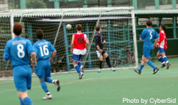
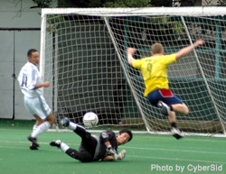

<html>

	<head>
		<meta http-equiv="content-type" content="text/html;charset=ISO-8859-1">
		<title>Tokyo Metropolis League - Oldnews</title>
		<LINK href=../../../include/stylesheet1.css rel=stylesheet TYPE=text/css>
		<SCRIPT LANGUAGE="javascript">

   <!--

   function closeMe() {
   opener.NewWindow=null;
      self.close();
   }
window.onerror = null;
   // -->
</SCRIPT>
<SCRIPT LANGUAGE=JAVASCRIPT TYPE="TEXT/JAVASCRIPT">
<!-- Hide script from old browsers
function popwindow(popsrc,stuff)
	{
	videoWindow = window.open(popsrc, 'Popups', stuff)
	}
// End hiding script from old browsers -->
</SCRIPT>
	</head>

	<body bgcolor="#FFFFFF">
		<table border="1" bordercolor="#33CC33" width="580" cellspacing="0">
			<tr bgcolor="#99FF99">
				<td bgcolor="#339933">
					<h2 class="white">Season 2</h2>
				</td>
			</tr>
			<tr>
				<td>
					<h1 class=red>EMBASSY GO DOWN FIGHTING!</h1>
					<p><b>Sat 25th June, St Mary's.</b> A sunny Saturday afternoon at St. Mary's was the venue for the end of season clash between two sides with nothing to play for except their pride. With BEFC having already been relegated to 
				Division Two some weeks ago, you would have thought that this would have been a dour game, wrong!   Goals, goals and more goals was the order of the day as these two sides produced an eight goal thriller.<BR>
					<table border="0" width="306" cellspacing="0" cellpadding="3" align="right">
						<tr>
							<td></td>
						</tr>
						<tr>
							<td>
								<p class=caption>Chiba JET's (aka SALA FC) walked away with the trophy at the Nagano JET's tournament, held on the beautiful grass pitches of Sugadaira last weekend. They were just 1 of 4 TML teams taking part in this annual tourney.
							</td>
						</tr>
					</table>
					<p>BEFC minus several keys players started sluggishly and were punished inside the opening 15 minutes as a Jetro midfielder picked a loose ball up from just inside the Embassy half and surged forward on a darting run which ended with a clinical right foot finish into the top right corner of the BEFC goal.<br>
						More Embassy sloppy defending on a corner around the 30 minute mark led to goal number two with JETRO heading home from close range beyond the desperate lunge of Mohamed, who could do little but groan as the ball crossed the line. BEFC suddenly sparked into life and the midfield combination of Kotaro, Mike Yeomans, Masa and Gerrard were creating chances at last.&nbsp; BEFC New boy pounced on a loose ball from the centre of the park, wriggled past a few half hearted challenges and slotted the ball home to make it 1-2. &nbsp;Half time couldn't come quickly enough for Jetro as their game plan seemed to be flying out the window, as error after error broke up their pattern of play in the final minutes of the first half.<br>
					</p>
					<table border="1" width="250" cellspacing="0" cellpadding="3" align="left">
						<tr bgcolor="#FF0000">
							<td>
								<h3 class=white>TML PARTY END OF SEASON PARTY<br>
										@ <a href="javascript:popwindow('http://www.bfctokyo.com/popups/legends.html','top=150,left=50,width=670,height=370,buttons=no,scrollbars=no,location=no,menubar=no,resizable=yes,status=no,directories=no,toolbar=no')">Legends - Roppongi</a><br>
										Cup presentations, BBQ, RAFFLE (<a href="../../../mats/images/05Raffleprizes.gif" target=_blank class="small">Click to see prizes</a>) &amp; more, Don't Miss it!</h3>
							</td>
						</tr>
					</table>
					<p>The interval gave the respite that Jetro needed, as they went 3-1 up within the opening minute of resumed play.&nbsp; Straight from the kick off Jetro played the ball out to their outside right who centred for an unmarked striker to gleefully head home. 3-2.<br>
						BEFC then pulled one back, Masa crossing beautifully from the right and new boy heading home powerfully from the centre of the six yard box for his second of the match.&nbsp; The pattern of play now was becoming more open with defensive errors a plenty.&nbsp; It was a comedy of errors which led to Jetros fourth goal.&nbsp; Centre back Sendo and BEFC keeper Mohamed failed to clear a loose ball which allowed JETRO to walk the ball into an empty goal, oh dear! &nbsp;4-2.<br>
						Minutes later the game took another twist as a BEFC forward dribbled and danced Brazilian style through the Jetro defence to slide the ball under the keeper 4-3.&nbsp; The fight back though was short lived and more clumsy defending allowed Jetro to finish off another stylish move and put the game beyond BEFC.<br>
						BEFC play their football next season in Division 2 and will be hoping to galvanize their troops for the coming campaign ahead, especially after such a tough season. &nbsp;Jetro will be looking to shore up their defence, if they wish to avoid a possible relegation battle next season.<br>
							TML Entertainment value: 8/10<br>
						<b><a class="txlink" href="http://www.blippilot.com/">BLIPPILOT</a></b></P>
				</td>
			</tr>
			<tr>
				<td><h1 class=red>THESE BOOTS WERE MADE FOR SHOOTING</h1>
				<p>
					<table border="0" width="256" cellspacing="0" cellpadding="3" align="left">
<tr>
	<td></td>
</tr>
<tr>
	<td><p class=caption>YC&amp;AC keeper, Derek Bean, punches away another dangerous cross as the Swiss keep his goal under constant pressure.</td>
</tr>
				</table>
					<p><b>Sat 18th June, Oifuto.</b> Swiss veteran striker and joint top goal-scorer in the TML, Karl Hahne scored two first-half goals to secure the Footy Japan Cup and the double for the Swiss Kickers.<br>
						<br>
						The game kicked-off with YCAC only managing to field a squad of 12, whereas the Swiss had at least two subs to give the team some options and respite for players when needed.<br>
						<br>
						The first turning point in the game came when the Swiss left back, Kai, carried the ball from 40yds out, attacking the space in front of him aggressively, YCAC failed to close the space and the young defender had all the time in the world to wind up, hit a rocket and force a very good save from Derek, the young YCAC keeper.<br>
						<br>
						Seconds later and it was Krando for the Swiss who carried the ball into the YCAC box, but instead of squaring the ball to an open Angelo, he rifled one off the upright, much to the relief of the YCAC back four, who had been caught napping. <a href="javascript:popwindow('http://www.Metropolis-League.com/archive/stories/05reps/0618fjfinal.html','top=150,left=50,width=550,height=550,buttons=no,scrollbars=yes,location=no,menubar=no,resizable=yes,status=no,directories=no,toolbar=no')">More...</a><br>
						<b>TML</b><br>
						<br>
						Or for a more 'Enterprising' report from Captain Kirk ... <a href="javascript:popwindow('http://www.Metropolis-League.com/archive/stories/05reps/0618fjfinal2.html','top=150,left=50,width=550,height=550,buttons=no,scrollbars=yes,location=no,menubar=no,resizable=yes,status=no,directories=no,toolbar=no')">click here</a><br>
						<br>
						<b class=red>Ten-man Sala battle past BFC to finish third.</b><br>
						<b>Sat 18th June, OiFuto</b> Ten-man Sala FC made light of their numerical disadvantage to beat BFC 1-0 on Saturday, securing third place in the TML. Xavier Hernandez tucked in a left-foot shot from the edge of the box midway through the second half to give Sala the points after having Yoshiki Endo sent off for violent conduct. BFC's hopes of finishing third were raised when Endo was sent off for senselessly lashing out at a BFC player as tempers flared following a dangerous tackle by the same player.<br>
						However, Sala responded well and Hernandez took advantage of some sloppy defending to beat the BFC goalkeeper with a low shot in the 70th minute.<br>
						Midfielder Tomo Kunii had a shot cleared off the line as BFC pushed for an equaliser and Brian Doyle blazed over late on but Sala held on to take the points.<br>
						<b>HB</b><br>
					</p>
					<table border="0" width="207" cellspacing="0" cellpadding="3" align="right">
						<tr>
							<td></td>
						</tr>
						<tr>
							<td>
								<p class=caption>Xavier Hernandez celebrates scoring the only goal as Sala passed BFC to finish 3rd in Div 1</p>
							</td>
						</tr>
					</table>
					<p>This was never going to be a classic by any stretch of the imagination. Two big teams with a lot of Brits on the park. The first half saw few chances at either end, though Toby will probably feel that he could have gone closer when the ball broke to him at the back post after a salmonesque leap by Giles.<br>
						BFC had a great chance to go ahead, when Sala didn't play the whistle after a handball shout, but their striker was a little eager to shoot and his effort from the edge of the box flew narrowly wide.<br>
						Xavier was the star of the show in the first half though, his running with the ball and without it were equally impressive and he continues to defy gravity by outjumping&nbsp;&nbsp;players a foot taller than him. But Yoshiki and Yusuke also had cool heads at the back and got forward well. In general Sala had the better of the first half but not by much, and BFC still looked like getting on the score sheet.<br>
						The second half didnt really get going until Yoshiki's sending off. This seemed to cement Sala's resolve, and they got stuck in harder.&nbsp;&nbsp;Guido, Steve and Clarkey seemed to win almost every ball flung at them for a while.<br>
						Charles, attempting a bicycle kick was kneed in the head by Sid &quot;Remy Bonjasky&quot; Lloyd, and had to go off. The return of Brian to the fray saw a renewed ambition upfront for Sala, and this eventually culminated in the goal.<br>
						Toby did well on the right, as he had for most of the half, and fed Xavier on the edge of the box who placed a low left footed shot in off the near post. 1v0.<br>
						After the goal, Guido took off Brian and put on Naoki to shore up the backline. He got straight into the mix and capped a great 15 minute cameo with one of the best tackles all season, not giving an inch against a much bigger, heavier opponent. Brookey came on for Lenny and fired up the midfield once more, as the final stages approached<br>
						The last five saw some high drama, BFC's Tomo had a shot cleared off the line and another striker blazed a drive over from only 8 yards.&nbsp;&nbsp;<br>
						The commitment and running showed by every Sala player in those final 5 (and then some!) minutes was a great ending to a pretty poor season.<br>
						Still, we finished third, and that aint so bad.<br>
						Finally thanks again to Martin and Naoki who didnt get much of an outing, none at all in Martins case. Its happened to me before and it isnt much fun, but this is how a football team works and the chance to play comes around again soon enough.<br>
						<b>RC</b></P>
				</td>
			</tr>
			<tr>
				<td><h1 class=blue>YOKOTA LEAVE DOOR OPEN FOR NOVA.</h1>
				<p>
					<table border="0" width="256" cellspacing="0" cellpadding="3" align="right">
<tr>
	<td></td>
</tr>
<tr>
	<td><p class=caption>Military Policeman Tim Fearney takes no prisoners when playing footy. His wicked right foot volley showed why he's Yokota's top striker!</td>
</tr>
				</table>
					<p><b>Sun 12th June,</b> Shane FC squandered numerous chances against a depleted Yokota FC and only just managed a point by converting a last minute penalty. With Striker/Captain Neil Willis having left for the UK, Shane seemed a bit lost in front of goal, putting a few 1 on 1's wide of the mark. Yokota, as usual, were very fit, but lacked any real menace with the Shane boys having the lions share of possesion but it was the boys from Yokota air base who got off the mark first with one of their only attacks of the match. Tim Fearney latched onto a through ball and smashed home a fierce volley from 30 yards out. It looked like they would take all the points securing the 2nd promotion spot in division 2, but a last minute penalty gave Shane FC the equalizer meaning if Nova FC can win their last match by more than 2 goals, they will replace Yokota as the 2nd promoted team!<br>
						<b>TML</b><br>
						<br>
					</p>
					<table border="0" width="256" cellspacing="0" cellpadding="3" align="left">
						<tr>
							<td></td>
						</tr>
						<tr>
							<td>
								<p class=caption>YCAC had on their new uniform to face France FC in their final league match of the season. Here will Richards does battle with the French right winger, Trent Anderson.</p>
							</td>
						</tr>
					</table>
					<p><b class=red>YCAC, FRANCE PLAY OUT DRAW</b><br>
						YCAC got the point it needed to cement 5th place in Div 1 with a 2-2 draw against France FC at St Marys on Sunday. They did it the hard way, spotting the opposition a 2 goal lead after 2 early defensive lapses. Goals either side of HT from new boy Mike Foster and Gavin Margetson squared things up, however, and despite further chances at both ends, that's the way it finished<br>
						A point apiece was no less than both teams deserved having serving up a spirited and skilful encounter belying its end of season/mid table status.<br>
						<b>STaw</b><br>
						<b class=blue>YCAC &amp; FFC sp(l)it the points at St Mary's</b><br>
						The French raced into a 2-0 lead after only 20mins goals following Olly Worsfold's close range effort and Takahiko Kanno's powerblaster from the edge of the box. However after a disputed French third was disallowed the YCAC roared back into the game and after hitting the post twice, YCAC fully deserved to equalise with goals either side of the halftime break. Whilst the game was played at a breakneck speed, there were also some moments of genuine quality.<br>
						The final scoreline of 2-2 was fair enough given that either team could of nicked the winner but then that would have been harsh on the opponent. Disappointingly, the great spirit of the game was nearly ruined in the final moments when players from either team accused one another of spitting. This is something that I personally DO NOT want to see and its up to the team captains and the league to stamp this out. Final word for the great referee who allowed football to be played but was also not afraid to tell the players to shutup if that was required without any bias or histrionics. Nice work fella!.<br>
						<b>OW</b></P>
				</td>
			</tr>
			<tr>
				<td><h1 class=red>UP FOR THE DOUBLE - SWISS LOOKING CONFIDENT.</h1>
				<p>
					<table border="0" width="256" cellspacing="0" cellpadding="3" align="left">
<tr>
	<td></td>
</tr>
<tr>
	<td><p class=caption>Dave Pratt volleys home his first as a corner eludes Terry &amp; Hitoshi, in Swiss' 3-1 win over Hibs</td>
</tr>
				</table>
					<p><b>Sat 4th June,</b> Great day for a game, a little bit unfortunate that it had to be at St. Mary's which is small for some big bruisers on both sides, but who can complain when I can't find any grounds myself!<br>
						The game started on time in spite of the Swiss' arrival 10 minutes before kick-off due to traffic.&nbsp; Both teams at full strength although it seemed like the Hibs were missing a few regulars. &nbsp;The pace was set early with some nice passing of the ball and the Hibs. sending some early balls into the box from the right.&nbsp; The Swiss try and take Bevan and Keita out of these matches and Spiers and Trevor were up to the task early on.&nbsp; Going the other way, Aoki on the right and James on the left were sending in some nice crosses which Karl and Suzuki were not getting to and Hitoshi was showing his strength. &nbsp;As the game progressed, more possession in midfield, especially for the Swiss, led to some good chances although shots were being stopped by Ike, Terry, and Hitoshi. &nbsp;A &nbsp;few corners were won and Krando sent one across the face of the goal, far enough away from Hitoshi, which Dave Pratt volleyed home beautifully after about 15 minutes.&nbsp; The Swiss seemed to gain confidence with that and more passing through midfield led to some nice balls into the box but no one was really looking like finishing them.&nbsp; One danger moment for the Swiss was a weak back pass from JP which was intercepted by Keita, he quickly found the center forward for a 1-1 vs. Peter but he mis-hit the shot wide.<br>
						After about 30 minutes, some good work in midfield led to Dave Pratt being free about 20-25 meters out, he decided to wind up the canon and let it fly. &nbsp;A beautiful shot across the goal from the right into the side netting on the left.&nbsp; Even Dave Pratt was able to smile at the skill on that one, beating Hitoshi in goal from distance is tough to do but this shot was unstoppable. &nbsp;The first half ended 2-0 to the Swiss with things looking pretty comfortable.<br>
						<br>
						The Swiss made a more changes at half time as a group of 14 players requires it. &nbsp;In spite of the changes, about 10 minutes in to the 2H, Aoki sent in a perfectly weighted cross to Kai who back headed across the goal (away from Hitoshi) for Karl to knock home with another header. &nbsp;It was good team skill and a great finish by the joint top scorer in the league.&nbsp; 3-0 to the Swiss with 30 minutes left meant that more player changes were made.<br>
						One change was made on the Hibs side as their center forward went down with a dislocated shoulder.&nbsp; Mick was brought on but a mere 5 minutes after being on the pitch, he was fouled by Krando (which Ricky correctly called). then for some reason, he lost it completely and proceeded to attack krando stunning everyone. Everyone including the ref, was watching and there was no choice but to send him off. &nbsp;Haven't seen that one since high school in Texas, pretty amazing but it will leave the organizers with the task of finding a just punishment for such a reprehensible offence.<br>
						The game got sloppier after that but the Hibs. kept pressing even with one man down.&nbsp; Their hard work was rewarded when Keita Narama tapped in from close range to make it 3-1.&nbsp; The Swiss defense held up after that to close out a deserved 3-1 win that takes them to the final of the Cup for at least a shot at defending the title and winning the double.<br>
						<b>Cap'n Kirk</b><br>
						<br>
						<b class=blue>YCAC HANG ON TO GAIN FINAL SPOT</b><br>
					</p>
					<table border="0" width="256" cellspacing="0" cellpadding="3" align="left">
						<tr>
							<td></td>
						</tr>
						<tr>
							<td>
								<p class=caption>Joe Takeda slots home YCAC's 2nd goal 'Just for his wife on her birthay'(so he told us!)</p>
							</td>
						</tr>
					</table>
					<p>YCAC scraped through the &quot;other&quot; semi final 2-1 on Saturday at St Marys. The game ended in the gloom of an impending storm with YCAC resorting to some pretty dour defending to cling on to the 2-1 lead that it had held at HT.<br>
						It wasn't all like that though. YCAC started very brightly and played some of its best football of the season for the 1st 30 minutes. Will Richards on the left and Daisuke Ogawa on the right were able to put in numerous dangerous crosses across the face of the Jets goal. Most flashed across invitingly enough but with no takers. Then Joe Takeda, from Wills cross, and Daisuke, from Joes, were able to finish from close range to give the Div 1 team a 2 goal cushion against its Div 2 opponents.<br>
						Right on HT though, Gary Garner was given the freedom of the YCAC penalty area and his neat finish put a different perspective on things. The Jets confidence grew throughout the 2H and YCAC were unable to put out the fire with a 3rd goal despite continuing to create the better chances. A James Absolom header and a Joe Takeda shot both hit the inside of the Jets post and bounced across the goal. Joe had a goal disallowed and also hit the bar from a corner.<br>
						Despite all their pressure the Jets were unable to create any further clearcut chances and YCAC hung on, just about deservedly, to earn another crack at the Swiss<br>
						<b>S Taw</b><br>
						<br>
						<b class=red>SALA SEND BEFC BACK TO DIV 2</b><br>
						The last time so many white shirts were seen together, somebody was in fear of a lynching. An unprecedented turn out of more than 11 players for the first time in living memory, helped Sala to keep the race for third going right down to the wire. The first match this season between these two teams yielded 12 goals in an incredible 7-5 thriller.&nbsp;This one could have gone the same way. But for two missed penalties by BEFC, the scoreline could have read very differently.<br>
						Sala started brightly and took an early lead when the artist formerly known as Big Gay Steve, popped up at a corner for one of his trademark towering headers. 1v0.<br>
						BEFC took it in their stride though and pressed forward.&nbsp;Steve, in an act of misguided charity decided to make amends for his goal by hauling down a BEFC striker in the box. From the resulting penalty however, Serbian basketball legend Ivan pulled out a great save. Sala went straight up the other end and rubbed salt and vinegar in the wound by going two nil up.<br>
						Dhugal latched onto a through ball and made rounding the keeper look very easy, again. 2v0.<br>
						More drama than saturday night in a English market town was to follow.&nbsp;&nbsp;A sweet inswinging corner by BEFC was destined for the back of the net until Lenny's hand got in the way. Another penalty and a lucky booking for Lenny whom the referee felt had not moved his hand to the ball in an effort to stop it. Ivan must have intimidated the taker with his fearsome size, and the spot kick went narrowly over. Once again lady luck shone on Sala, who went up the pitch and scored again.<br>
						Brian's long throws caused trouble all day long, and from one such missile, Charles hooked a volley into the top right corner. 3v0 and BEFC must have been gutted at half-time.<br>
						The second half wasn't quite as&nbsp;&nbsp;good value, especially after the fourth goal went in. Toby latched on to a Shigeru through ball, before beating his man and slotting home from 10 yards, 4v0. Brian forced the keeper into a couple of good saves late on, whilst at the other end&nbsp;the Sala defence kept the door shut, the memory of last weeks French lesson still etched clearly on their faces.<br>
						The last goal came from Charles' corner, which Clarkey volleyed home from the penalty spot. 5v0. The last game of the season between Sala and BFC will be for third place, winner takes all(Well, all that third place has to offer.<br>
						<b>R C</b></P>
				</td>
			</tr>
			<tr>
												<td bgcolor="#339933">
														<h2 class="white">May 2005</h2>
												</td>
											</tr>
			<tr>
				<td><h1 class=blue>SWISS NO MATCH FOR MAN U.</h1>
				<p><b>Sat 28th May,</b> KFC and YCAC had teams down at the Hong Kong 7's tournament.  KFC Tokyo, which was made up of members from the Swiss, Hibs, and YCAC played in the main competition while YCAC with members from the Swiss and YCAC played in the veterans competition.  KFC was grouped with the Urawa Reds, Manchester United, and an All-Star team from Hong Kong's amateur league.  The YCAC was grouped with Middlesborough (Gary Pallister and Tony Woodcock), the Footballers Channel from the UK, and a local club from Hong Kong.  
	<BR>KFC went down 2-0 to both of the pro sides and tied the Yau Yee Select team to end up 4th in the group and drop down to the plate.  YCAC drew against both of the ex-pro teams and beat the local team 1-0 to advanced to the Cup competition.  The following day, YCAC went down 1-0 in the first game of the Cup to the Hong Kong Football Club to go out of the competition.  KFC drew with a local pro-side and won on penalties following a nice save by Hitoshi from the Hibs.  In the second game, KFC played local pro-side Kitchee and had a chance to win 2-1 but missed a penalty and ended up going down 3-1 in the closing minutes.  
	<BR>Great tournament which Urawa ended up winning by beating PSV Eindhoven in the main Cup final 3-0.  The German All-Stars (with Uwe Bein and Rumminegge) beat up on the British ex-Pros 3-0 (John Beresford, Barton, Bolder in goal) in the veterans final.
	<BR><b>Cap'n Kirk</b></P>
				</td>
			</tr>
			<tr>
				<td><h1 class=blue>FRENCH CLAW BACK LAST SECOND DRAW WITH SALA</h1>
				<p>
					<table border="0" width="256" cellspacing="0" cellpadding="3" align="right">
<tr>
	<td></td>
</tr>
<tr>
	<td><p class=caption>Sala's Dhugal &amp; Toby (don't ask which is which) win a midfield battle with Yannick of FranceFC.</td>
</tr>
				</table>
					<p><b>Sat 28th May,</b> On a hot and humid day at Ina, middle of nowhere (a.k.a. Ina Saitama), a mid-table TML Division one clash between Sala and FranceFC would hopefully go some way to clear the table's minor placings behind the inevitable Swiss and Hibs. France FC should have opened the scoring when presented with a couple of easy chances in the first five minutes but then the Sala midfield perked up and the French can consider themselves lucky to come away with a 2-2 draw after Sala dominated most of the game.<br>
						The opening Sala goal, after about 15mins, was a well taken effort from the Sala striker, Dhugal Beddingfield, when he beat the FranceFC offside trap with a perfectly timed run onto a nice defense splitting pass from the centre of the park. The second Sala goal, 10mins into the second half, came after a sweet cross from the right eluded the French goalie and was volleyed in with aplomb by the onrushing Sala striker. Sala then had a number of chances to kill the game off but failed to take them.<br>
						The FranceFC comeback was startling as it was lightning. With less than five minutes to go the FranceFC midfield picked up the pace and after crashing a shot against the bar and missing one or two sitters the FranceFC midfielders worked a fine move down their left hand side and the resulting cross was volleyed in at the back stick by Olly Worsfold. The FranceFC equalizer came after more great work from the French midfield and a back headed goal from Etsushi Yoshikoshi into the open net left the Sala team stunned. With less than 30 seconds to go the FranceFC team could have even won the game but it was not to be and would have quite frankly been harsh on Sala. The final 2-2 score left both teams disappointed because FranceFC needed the win to climb the table and Sala were naturally gutted after letting slip a game they had dominated for about 70minutes.<br>
						<b>OW</b><br>
						<b class=blue>Another French lesson for Sala.</b><br>
						Two nil up and cruising to a straightforward win over France, Sala pushed the self-destruct button in the last two minutes and felt like the losing team coming off the pitch.<br>
						Read the full Sala report <a class="txlink" href="javascript:popwindow('http://www.Metropolis-League.com/archive/stories/05reps/0528salavfra.html','top=10,left=10,width=550,height=550,buttons=no,scrollbars=yes,location=no,menubar=no,resizable=yes,status=no,directories=no,toolbar=no')">here...</a><br>
						<b>RC</b><br>
						<b class="red">WITH CHAMPIONS DECIDED, LEAGUE MATCHES WIND UP IN ANTICIPATION OF THE CUP!</b><br>
					</p>
					<table border="0" width="256" cellspacing="0" cellpadding="3" align="left">
						<tr>
							<td></td>
						</tr>
						<tr>
							<td>
								<p class=caption>Ian 'Frodo' Warner powers his way through midfield past Shane captain Neil Willis.</p>
							</td>
						</tr>
					</table>
					<p>Now that the Champions have been decided, the Swiss vs Hibs final league match was of no consequence except good preparation for their coming Semi-Final Cup match. Swiss beat their close rivals 1-0 at St. Marys in a closely contested match but the real test will come when they meet at the same place in the cup on June 4th. Swiss, current FC Cup holders and New league Champions will hope to do the double this year, but arch rivals &amp; last years league Champions Tokyo Hibernian will not give up easily. If you're in the area, 'Don't miss this match', it'll be a corker!<br>
						In the 2nd Division, Kanto Celts &amp; Vagabonds FC finished this years league campaign on a high, both teams coming back from a 1 goal deficit to win. Vagabonds dominated a 10 man Shane squad, scoring a goal in each half to win the match 2-1. <a href="http://www.bfctokyo.com" target="_blank">more...</a> Celts needed a 2nd half revival after going into the break 1-0 down against Dutch Embassy Team, and what a revival it was. 5 goals secured them a nice victory while the Dutch were left to ponder what had happened to their season after such a great start!<br>
						Geckoes once again found themselves lacking in key areas and were punished by the 'fighting for survival' JETRO FC. JETRO are now almost certain to stay in Div 1 leaving BEFC &amp; Maritizio to take the fall. BEFC are still clinging on to hope though, as mathematically it's still possible for them to stay up and with them to face JETRO in their final game........<br>
						<b>Ed</b></p>
				</td>
			</tr>
			<tr>
				<td><h1 class=blue>SWISS TAKE TITLE AS HIBS FALTER.</h1>
				<p>
					<table border="0" width="208" cellspacing="0" cellpadding="3" align="left">
<tr>
	<td></td>
</tr>
<tr>
	<td><p class=caption>The closest the kickers have to a 'real' Swiss player, JP, fires in a volley, only to see it come straight back off the crossbar!</td>
</tr>
				</table>
					<p><b>Sun 1st May,</b> Pressure time at Oifuto on the first day of Golden Week. The Swiss and Hibs were going down to the wire to determine this year's champion and the Swiss could take a giant step to the title with a win over the French due to their superior goal difference. Sid, the league organizer, was doing his best to build up the French confidence and possibly even a payoff was in the cards for an upset but the Swiss weren't up for it. The Swiss came out with a 4-4-2 while the French also were going defensive with only 1 man up front.<br>
						It was a somewhat stale first 20 minutes with both teams fighting in midfield and only the occasional long ball seeming to open things up. Unfortunately for the Swiss, a few open chances were left wanting due to poor finishing from Kirk, among others, and the frustration was starting to show again. What changed the flow was a great run from Dave Pratt from midfield, beating 2 defenders to get into the box, and coolly crossing for Karl to bang in from 8 meters out. It was a classic center midfielder's run, shaking off the challenges with power and speed, it was great to see.<br>
						1-0 to the Swiss seemed to take some pressure off them but the French seemed to raise their game a bit. They started connecting passes better in midfield and seemed to get off a few shots from distance. About 8 minutes after the Swiss goal, a weak header into the area which Kirk could only head backwards, led to some confusion between the keeper and the defense. In slipped one of the French forwards who acrobatically shot it from the end-line and into the goal, past the on-rushing Swiss Keeper. It was poor defending but a well taken goal and full credit to the forward.<br>
						The Swiss seemed to realize what was at stake again and raised the level once again - sharper passing and tougher tackling meant some tough calls for the referee but some solid wins in midfield. The French were able to get some shots from distance but Uchida was able to save them well. Going the other way, there was nothing the French could do when a long ball from Kirk found Mori in space on the left hand side, he beat one defender and fired in a left footed shot from the top of the box. The keeper got a hand to it but it still snuck inside the right hand post. 2-1 to the Swiss as we came to the end of the first half.<br>
						The Swiss made a few changes at the beginning of the 2nd half, with Mori and Aoki coming up front. The French made some changes as well by pushing another man forward to try and get the tying goal. This opened things up and the Swiss at the beginning of the half had many chances, Mori had an open shot following a nice 1-2 move with Aoki while JP had a curling volley come off the cross bar. Krando and Kai started to overlap more and it was some nice football.<br>
						Unfortunately, the French defense held up and the Swiss couldn't score the third goal. More player changes for the Swiss meant the rhythm started to change somewhat and they couldn't hold onto the ball. Instead, there were some dangerous counter attacks for the French and some free kicks outside the area following some tough tackles by Dierk and the two Daves in midfield. The tension was evident till the end with the Swiss barely holding on as woeful finishing in front of goal (Angelo and Karlalong with Yuji) and the dangerous French forwards always threatening making it interesting.<br>
						Things boiled over a little at the end with the two Daves and Dierk getting into it with one of the French players but as Dave Pratt said well, &quot;You came for a football game, didn't you?&quot; A little bit untypical of the Swiss but every team needs a little extra when fighting for the title and the Swiss showed that on the day. Well done to the French who made it a very tough game.<br>
						<b>Cap'n Kirk</b><br>
						<br>
					</p>
					<table border="0" width="206" cellspacing="0" cellpadding="3" align="right">
						<tr>
							<td></td>
						</tr>
						<tr>
							<td>
								<p class=caption>Hitoshi Ono plucks the ball from the head of Pablo Pomares during Hibs &amp; BFC's 0-0 stalemate!</p>
							</td>
						</tr>
					</table>
					<p><b class="red">HIBS HELD BACK BY BFC.</b><br>
						After the Swiss had beaten France earlier in the day, the TML title all but decided as the Swiss' superior goal difference meant the Hibs required a 10-0 victory to stay in the hunt. However considering the Irish V English and Hibs Vs BFC history; both teams desperately wanted to win this game.<br>
						The Hibs dominated possession and field position right from the kick off, and Hitoshi could have smoked a cigar or two without interruption before half time. Conversely Sid in the BFC goal was on the job throughout the early exchanges. Within the first 30 minutes the Hibs had two strong penalty appeals turned down by Ricky the Ref; one for handball - where the ball did hit the BFC player's hand, with the arm a long way from the side of the body, and the second against BFC midfielder Pablo Pomares who charged into Bevan inside the box getting a big piece of his leg, with Ricky considering the PK before waving play on. Midway through the first half and long range Kuni H free kick found Bevan's head and he knocked it down to Keita who controlled with a great first touch and shot with pace from 14 yards. Sid somehow saved it ( I don't think he knew much about it), but the impact of the speeding ball on his body left him clutching his lower back and running to the subs bench in search of the Tokyo Physio phone number. The scores remained 0-0 at half time.<br>
						BFC came out stronger and more physical in the second half, with some burly midfielders ready to play tough. Tetsu and Yasu were forced to pay for their speed in 50/50 challenges as they ended up with swollen shins and bloody noses respectively as the end result.<br>
						20 minutes from time and BFC had their best chance of the game, as a nice build up on the right saw Evans put a great ball through to the back post, but it flew past the post with attackers 10 yards off the place. Late in the second half the Hibs had two very good chances to win the game, with Yasu threading through a perfect ball for Mitsu who was unable to get a foot on it when the keeper was committed, and Kuni K was released following some smart work by Keita, and he shot well from 10 yards but the ball somehow missed the back post when everyone thought it was going in.<br>
						0-0 it remained until the end and the 2nd TML title goes to the Swiss.<br>
						<b>Bryce Caughtney</b><br>
						<br>
					</p>
					<table border="0" width="256" cellspacing="0" cellpadding="3" align="left">
						<tr>
							<td></td>
						</tr>
						<tr>
							<td>
								<p class=caption>The Jetro goal lays under seige late in the 2nd half as Shigeru pumps in another shot.</p>
							</td>
						</tr>
					</table>
					<p><b class="blue">SALA IN MIGHTY COMEBACK</b><br>
						A blustery day down by the river, saw Sala give Jetro a 2 goal head start as a true test of their fighting qualities. Quite literally from the kick off, Sala, were dispossessed, and then stood and watched as Jetro played a neat one two on the edge of the box, allowing their striker space to dink the ball over Andy Cross. As Sala tried to figure out what was going on, Jetro went about the business of doubling the scoreline. From fully thirty five yards, a Jetro midfielder thumped a shot in off the angle of post and bar, a superb strike.<br>
						Tensions began showing in the Sala team immediately and it seemed for a time that they may self destruct. But fortune favours the brave, and as Sala pushed forward a nice through ball from Shigeru found Toby in space. With the ball bouncing awkwardly, he did well to slice it past the oncoming keeper. 2-1.<br>
						Sala continued to turn the screw for the rest of the first half, despite a couple of hairy moments at the back. With Clarkey and Steve completely dominant in the air though, Jetro's attacks began to dry up.<br>
						At half time new boy Yusuke came on for Doug Lee and impressed everyone with his quick feet and cool head. Sala pushed forward relentlessly in search of an equaliser from the start.<br>
						It arrived after about ten minutes, when following a melee in the box, the ball broke (was passed by Toby?) kindly to Charles who put it into the roof of the net. 2-2<br>
						Minutes later Steve thought that he had given Sala the lead, but his header from a corner was ruled offside. With no more imperious a witness than TML's own Sid Lloyd, there was little complaint. Sala didnt have to wait long though, Giles and Lenny found more and more room out wide as ther game went on, and Yusuke began overlapping well up the right. After one such attack was broken up, Charles swung the ball back into the box where Dhugal was waiting. The header was perfect, back across the keeper into the far corner of the net.<br>
						It was a tense finish as Sala tried to hold on to their lead, and Jetro scrambled desperately for a point. The final nail in the coffin arrived right at the death. Lenny flicked on a long clearance and Toby once again scampered free. This time he found himself pushed out towards the left hand corner of the penalty box on his weaker left foot. With the seconds ticking though, he elected to shoot, and unleashed a piledriver over the keepers head into the top right corner. Game over. Sala 4v2 Jetro. All credit to Jetro, who played a clean game, and almost stole a draw at the end.<br>
						<br>
						<b>Roddy</b></p>
				</td>
			</tr>
			<tr>
												<td bgcolor="#339933">
														<h2 class="white">April 2005</h2>
												</td>
											</tr>
			<tr>
				<td><h1 class=red>LATE GOAL SAVES SWISS BLUSHES</h1>
				<p>
					<table border="0" width="206" cellspacing="0" cellpadding="3" align="right">
<tr>
	<td></td>
</tr>
<tr>
	<td><p class=caption>Celebrations worthy of a Cup winning goal as Angelo scores Swiss' winner near the end of their match with BEFC.</td>
</tr>
				</table>
					<p><b>Sat 23rd April,</b> Great day for a game of footy, too bad it was hard a very tough one for the Swiss vs. the British Embassy. Starting with an offensive formation, the Swiss appeared to think chances in abundance were going to lead to goals. Unfortunately, as was the case the week earlier against Maritizio in the first half, an inability to find the net by what has been a potent strike force nearly cost them precious points. The game started with the Swiss holding position and BEFC working hard (especially with only 10 men at the start) to pressure and then get all their men behind the ball. It paid off for the first 15 minutes until the Swiss were able to get a cross in to speedy Yuji who snuck in to tap in from close range. The rest of the first half, it was more of the same. Swiss holding on to the ball and trying to find a way in but too many passes or too many crosses to no one aggressive enough in the area meant many chances were wasted. Everyone was guilty of either not having a crack on target or getting on the end of a corner or a cross. Credit to the BEFC defense who worked hard and pressured the forwards and cleared numerous chances away but it was really the lack of Swiss ability to put it away which proved to be the weak spot. The first half ended 1-0 to the Swiss but it should have been more, the BEFC had barely been in the Swiss half of the field and didn't have a shot all half.<br>
						The second half looked to be more of the same possession-wise and the Swiss hoped the introduction of Angelo might spark the attack force. Instead, more missed chances and a lack of understanding between new players caused more confusion than opportunity. It was very frustrating to watch from the back and it is games like these that lead to upsets. That looked to be on the cards when 20 minutes into the 2H, the BEFC earned a free kick near midfield. Their big central defender came up into attack to act as the target man. He pushed Kirk off the header (another no-call from King Kazu) and the ball bounced near the top of the box without anyone claiming it. New defensive recruit Cho had a free chance to clear it but instead passed it directly to the on-rushing big man who then shot calmly into the lower left hand corner of the net for a 1-1 tie. Completely against the run of play but a well taken goal off a defensive error.&Ecirc;<br>
						For the Swiss, with title aspirations on the line, everything was thrown forward to try and score the winner. No more passing around, crosses from everywhere into the box. At least people started shooting more and started to test the keeper. Angleo's acrobatics were on display as he tried a bicycle kick in the area to no avail. Suzuki shooting from distance drew a nice save from the keeper, later on he shot from 7 yards out, straight to the corner flag. Kai had a beautiful header off a corner kick going into the right hand corner only for Angelo to block it away. The Swiss tried everything with no result. The game seemed destined for a draw as a result of the well organized BEFC defense and the woeful Swiss attack. Luckily, with about 5 minutes to go, a cross from the right bounced in behind the defense and Angelo's hard work paid off again with a difficult but well taken goal. The cheers from the Swiss team had never been louder and everyone breathed a sigh of relief at what appeared to be the game winner &lt;ETH&gt; the last 5 minutes seemed long but the final whistle was a welcome one. A very ugly victory but in league play, anything can happen on any day. Well done to the BEFC for sticking to a strategy that nearly paid off. The Swiss have got to be more clinical in front of the net in their last 2 matches to have any hope of claiming the title.<br>
						<b>Cap'n Kirk</b></p>
				</td>
			</tr>
			<tr>
				<td><h1 class=red>KGFC WIN SECOND DIVISION UNBEATEN!</h1>
				<p>
					<table border="0" width="106" cellspacing="0" cellpadding="3" align="right">
<tr>
	<td></td>
</tr>
<tr>
	<td><p class=caption>Like Real Madrid, KGFC are a team to be reckoned with!</td>
</tr>
				</table>
					<p><b>Kwansei Gakuin Football Club (KGFC)</b> maintained their unbeaten record to comfortably win the second division and promotion to division one next season with a game in hand. KGFC, with one game yet to play against AFC Wanderers, are over 10 points clear of second place Yokota, who were beaten by the champions 3-2 at Ina, Saitama on April 16. KGFC, a team comprised of Kwansei Gakuin University (not so) old boys, have only conceded 6 goals in the entire season so far and have scored a whopping 39. They have quite literally been untouchable in the second division and are looking forward to playing some more competitive football in the new season starting in September. TML rules state that all new teams joining the league must first play in the lower division. Even the big-guns in the first division will have their work cut out for them with this young, fit and technically superlative team.<br>
						<b>JD</b><br>
						<b class=blue>Damo's Double Does for Wall Street.</b><br>
						<b>Sat 16th April, Ina, Saitama.</b> Damian Hart scored 2 from Free-kicks and set another up for Joe Takeda as YCAC dumped the Geckoes out of the FJ Cup on Saturday at Ina, 4-2.<br>
						Read about the whole days adventures from the Stars own Diary <a class="txlink" href="javascript:popwindow('http://www.Metropolis-League.com/archive/stories/05reps/0416ycacvgek.html','top=10,left=10,width=550,height=550,buttons=no,scrollbars=yes,location=no,menubar=no,resizable=yes,status=no,directories=no,toolbar=no')">here...</a> (and believe me, this is a MUST READ!!!)<br>
						<b>S Taw</b><br>
						<br>
						<b class=blue>HIBS COME FROM BEHIND TO DUMP SALA FROM CUP.</b><br>
						Injuries and travel reduced the Hibs to an under-strength line up for this important fixture with Mick O'hagan stepping into Hitoshi's sizeable shoes in goal. Sala were also weakened by the recent losses of Naoki, Jody and Stephen Brooke-Smith. Sala however lacked nothing in physical size and presence and are always well up for a game against the Hibs. The opening exchanges were physical with many challenges from both sides ending in fouls. Midway through the first half and Terry was harshly judged to have fouled a Sala defender while winning a header about 40 yards out. The kick was swung in and Dhugal Beddingfield directed a soft header goal wards from 8 yards out. The ball bounced once (maybe twice?) and it would have been a regulation save for Hitoshi. Unfortunately for the Hibs it was O'hagan not Ono in the number 1 Hibs shirt and the ball somehow found its way over the gloves and into the Hibs net. It was to be Sala's only shot on target all game. The scores remained 1-0 at half time.<br>
						15 minutes into the second half and the Hibs Yasu Yomota received the ball in traffic wide on the left. He decided to try his luck and run at the flock of defenders and somehow got through 4 or 5 to find himself in space at the byline and he cut the ball back diagonally across the box. With all the Sala defenders charging towards Yasu the top of the box was left unguarded and the ball reached Bevan who struck the ball low and back into the far corner; wrong-footing the keeper and putting the Hibs level. Keita soon produced some magic after a post corner scrap and he poked the ball inside the keeper's near post to put the Hibs ahead 2-1. Sala's collective frustration boiled over with their defender Clarkey, who had been having a very good game; fouling Tetsu from behind. Clarkey was furious for what he saw as diving and felt that warranted him one free swing of his boot at the prone Hibs man. Fortunately Quentin didn't agree that he was entitled to this and promptly showed him a red card.<br>
						The last 15 minutes of the game saw Sala concentrate on playing football again; but they let several set pieces go to waste before time ran out on them and the score finsihed at 2-1. Sala do not have to wait long for their chance at revenge as the two teams meet in the league game next Sunday. The Hibs move on to play the Swiss in the semi finals; who will hope to have their famed watches finally adjusted correctly to get them to the match on time. <b>Bevan Colless</b><br>
						<br>
						<b class=red>SWISS BLUSHES SAVED AFTER FOCUSED 2nd HALF.</b><br>
						Another great spring day for a game, the Swiss nearly managed to miss it by getting off at the wrong exit and then getting stuck in the great Saitama jam. Fortunately, the bus pulled up just as we approached the time deadline set by Quentin and the Ina Sports center and we were able to start the game (as opposed to the last game of last year's league). The quarterfinals of the League Cup with the Hibernian just having beaten Sala, they actually looked rather peeved when we arrived as I think they were starting to like the idea of playing Maritizio in the semis. Maritizio had been waiting, fortunately with only 10 players because at the start, the Swiss team was mentally still in the car. The pass work coming out of the back was ok but once in the attacking 3rd, people didn't know what to do. Angelo &amp; Dave Spiers firing wide (a little close to the corner flag actually), Karl knocking a header and a shot over from close range, people looking to pass instead of shoot and then shooting when the pass was the better option. While the Swiss couldn't hit the side of Roppongi Hills (or the Saitama Sports Center for that matter), Maritizio was settling in and a nice counter attack off some silly defending led to a very well taken goal and a 1-0 lead with 25 minutes gone. Uchida was left watching as the drive from the top of the area went in the left side of the goal. Kirk started screaming again and the tension started to rise on a clearly frustrated Swiss side. It didn't change the result though and the first half ended 1-0 to Maritizio.<br>
						At halftime, all the Swiss players agreed to settle down and focus a little more on putting the ball in the back of the net as opposed to picking out the perfect pass or the perfect rice paddy. The message got through and Dierk started the ball rolling with a well taken goal about 5 minutes in to draw the teams level. 5 minutes later, a corner kick from Aoki found Kirk's outstretched leg (around the defender) for a volley to make it 2-1. Maritizio's players' heads started to drop and the Swiss started to gain more confidence. After that, Angelo found the net 3 times with one great left footed shot and two scramblers, while Aoki and Karl both scored. There were more chances missed but the score was indicative of the traffic throughout the game. Maritizio could have used an extra player and might have put the Swiss out of the Cup if they had taken advantage of the Swiss sloppiness in the first half. However, once the Swiss focused, a better performance resulted and the numerous chances generated produced the goals.<br>
						<b>Cap'n Kirk</b><br>
						<br>
						<b class=blue>BFC stop the rot with embassy win</b><br>
						Two goals from Evans and one from new boy Shun Sieg helped BFC to a comfortable 5-0 victory over a struggling British Embassy team on Saturday. Sieg's sweetly-struck opener after 10 minutes set the tone and Evans doubled BFC's lead when his attempted cross drifted inside the far post. Captain Brian Doyle made it 3-0, heading in a Neil Collins corner five minutes before halftime. Collins set up Jon Day for a fourth and Evans claimed his second of the match with a deflected goal late on. After two successive defeats, BFC played with more urgency and with Collins and Evans in the mood, could have scored 10 against a depleted embassy side.<br>
						<b>H Bushwacker</b></p>
				</td>
			</tr>
			<tr>
				<td><H2 class=blue>NARAMA SPOILS YC&amp;AC'S 1st ROAD TRIP.</h2>
				<P>
					<table border="0" width="177" cellspacing="0" cellpadding="3" align="left">
<tr>
	<td></td>
</tr>
<tr>
	<td><p class=caption>Keita Narama scored both goals to give Hibs a 2-1 victory over YCAC, and put him alongside Karl Hanhe of Swiss at the top of the scoring tables.</td>
</tr>
				</table>
					<p><b>Sun April 10th 2005. OiFuto.</b> Hibs had much the better of the 1st half as YCAC struggled to adapt in its 1st ever TML game away from the grass of Yokohama. The problems YCAC had in keeping the ball on the surface were compounded by the aggressive running and hustle of the Hibs team. They had obviously decided to go for the jugular from the start and their attacking formation was rewarded with an early goal. A lofted ball over the top left Keita advancing all alone on Derrick Beans goal. He expertly lofted the bouncing ball over the keepers head and it was 1-0 before YCAC had even begun to settle. With the YCAC defence tending to err on the side of caution and sit deep to defend the ball over the top there was plenty of space for Bevan and Mick O'Hagen to drop off and pick up the ball. Clever interplay from these 2 caused problems for the rest of the half but didn't create any more real chances for Hibs to increase their lead. James Absolom, who doesn't know the expression &quot;lost cause&quot;, almost squared things up late in the half when he latched on to a loose ball after the Hibs Goalie had collided with a defender, but his goal bound shot hit a retreating defender.<br>
						The 2H was a more even affair with the Hibs unable to keep up quite the pace of the 1H. As the game went on YCAC began to push men forward but looked susceptible to the counter attack. Keita seemed to have killed things with 10 minutes to go off when a defensive slip allowed him to run in unhindered on the YCAC goal. He finished at the 2nd attempt to leave YCAC with the proverbial mountain to climb. They couldn't but did get half way up, at least. A thunderous Damian Hart free kick forced Hitoshi Ono in the Hibs goal into a great diving save but seemed to knock some self belief into YCAC and they swarmed forward in earnest. Things were made interesting when Damian got a 2nd free kick outside the Hibs box. As is so often the case the shot he hit perfectly didn't go in but the one he didn't, did. The ball pinged through a crowd of players to leave Hitoshi unsighted and the ball snuck into the far corner.<br>
						Too little too late though and the Hibs closed out a deserved 2-1 win out in the semi darkness where the luminous green shirts finally looked like a good purchase<br>
						<b>S Taw</b><br>
						<b class=red>Swiss more than a handful for BFC</b><br>
					</p>
					<table border="0" width="158" cellspacing="0" cellpadding="3" align="right">
						<tr>
							<td></td>
						</tr>
						<tr>
							<td>
								<p class=caption>Angelo made it 4 goals in 2 matches as he grabbed a brace against both Maritizio and BFC in succesive weekends.</p>
							</td>
						</tr>
					</table>
					<p>Swiss Kickers preserved their lead at the top of the TML first division with a flattering 4-1 win over BFC on Saturday. Three handball decisions went against BFC, two of them resulting in goals for the Swiss and the other a vehement penalty appeal that was waved away. Angelo put the Swiss in front after 20 minutes after appearing to handle before a defensive mix-up let in Karl Hanhe for a second moments later. BFC then had a legitimate penalty claim turned down by referee Pietro, who then gave another free kick to the Swiss for another handball, although the ball appeared to hit Leigh's hand rather than vice-versa.<br>
						Swiss's Captain Kirk scored from the resulting free kick with a 30-metre blast that was still accelerating as it hit the back of the net. BFC had their chances, with strikers Jon Day and Alastair Himmer guilty of misses that were to prove costly. Five minutes into the second half, Angelo lobbed BFC goalkeeper Sid Lloyd after another defensive error to kill the game off for the Swiss. Substitute Lindsay Hughes pulled one back when his cross drifted over Swiss goalkeeper Dierk and into the far post. Defender Ryo Yasunaga twice went close with headers and Day was unable to control a Tomo Kunii cross when in space but in truth BFC had left themselves with a mountain to climb after the first half.<br>
						<b>H Bushwacker</b><br>
						Sunday, April 10th, perfect day at Oifuto for a match between old rivals, the BFC and the Swiss. Both teams had nearly full lineups at the start although the Swiss keeper's snowboarding accident still keeps him on the sidelines and a reserve was called into action - Dierk. The BFC's strength's lies in midfield with tough tackling in the middle and the skill players through Tomo and Neil out on the wings. The Swiss tried to counter that with James on Tomo and Suzuki and Yuji combining to snuff out dribbling menace Neil. In defense, Kirk, Trevor and Kai were given the job of shutting down the passes to Jon and Big Al. The start of the game was pretty even with both teams trying to connect through midfield. The first clear chance fell to the Swiss, it came from a cross from James on the left which Suzuki met brilliantly with a header only for Sid to dive to his right for the stop.<br>
						The Swiss midfield gradually started to assert control with Dave Spiers and Pratt working hard to win the ball and the spreading the ball wide or to Angelo and Karl in the middle. After 20 minutes or so, the Swiss sent enough balls into the box eventually for Angelo to bang one in after it bounced around. Just a few minutes later, Karl pounced on another loose ball from a corner which bounced off Trevor's face, Karl put it in calmly and made it 2-0. About 5 minutes later, a handball about 25 yards out led to a free kick which Kirk surprisingly smacked into the far corner for a 3-0 lead.<br>
						10 minutes and 3 quick goals seemed to take a lot of out of the BFC (it does most teams). A few players were subbed and the rhythm changed a bit but the pace of the game remained the same with the Swiss holding more possession and getting close but not finishing anymore than the 3 already scored.<br>
						In the 2H, more player changes were made but the tempo remained the same. The Swiss seemed to be able to hold onto the ball in midfield while the BFC was having trouble getting the ball to its forwards and the Swiss defense was regaining possession quickly. This led to one breakaway for Angelo which he knocked over Sid for a 4-0 lead with 15 minutes gone in the 2H. After that, the Swiss passed it around nicely but the work effort dropped and the BFC started to press more. They started more counter attacks and the midfield started to carry the ball better into the attacking 3rd. This resulted in corner kicks and a few shots on target. The Swiss did give up a goal on a cross into the wind which spiraled over Dierk. In the end, the Swiss effort dropped off a bit but the defense held up. Andy coming in goal after arriving at Narita a few hours earlier helped out and Dierk even got a few minutes out of goal.<br>
						<b>Cap'n Kirk</b><br>
						<b class=blue>CELTS GIVE SALA CUP SCARE!</b><br>
					</p>
					<table border="0" width="206" cellspacing="0" cellpadding="3" align="right">
						<tr>
							<td></td>
						</tr>
						<tr>
							<td>
								<p class=caption>Tony Moore endears himself to the French midfield in a match where Geckoes just edged it 3-2 &amp; magazine pin-up 'Rob Manager' got lobbed!</p>
							</td>
						</tr>
					</table>
					<p>The Celts took a deserved point from their FJ cup game with Sala at a Sunny and Hot Ina in Saitama on Saturday afternoon. With both teams scrambling to field a team in the days preceding, it was always likely to be an open game and so it proved.<br>
						Sala started the brighter, with some slick passing unlocking the Celts defence only to find keeper Aki in great form between the sticks. As the game wore on the Celts managed to get a foothold in the game through the hardwork of midfield quartet Seamus, Magoo, Stephen and Jeremiah with Striker Tom dropping deep to pick up possession. The best they managed to show was a couple of long range efforts, including one deflected effort that nearly embarrassed the Sala keeper.<br>
						Sala ended the half on top, with Guido and Brian pulling the strings in the middle, they created a couple of chances before half time, one goal disallowed correctly for offside and one denied by a brilliant save by Aki.<br>
						The Celts began the second half with brighter, more enterprising play and took the lead after 8 minutes. Sala failed to clear a magoo cross properly and Ruairi rasped a screamer into the top corner with the outside of his left boot. Keeper no chance.<br>
						Celts almost doubled their lead on a couple of occasions, a couple of long diagonal balls catching the Sala defence flatfooted on more than one occasion, 2 shots flashing just over the upright.<br>
						As the Celts began to tire towards the end, Sala began to exert more pressure on Aki who was finally beaten with just 9 minutes on the clock.A a cross from the right caught the Celts defence flat-footed and the Sala winger nipped in to tuck home.<br>
						The remainder of the game was played out without much further incident, with the Celts left to rue what might have been in the FJ Cup, late goals v France and Sala costing them progression to the quarter finals.<br>
						<b>R Hatchell</b><br>
						<b class=red>Promotion Hopes End In a Whimper</b><br>
						The slim promotion hopes of the Saitama Jets and the Dutch Embassy both ended with a 2-2 draw between the teams at Ina on April 9th. The Dutch started strong, and went ahead after a mixup between rookie Jets goalkeeper Fraser Gould and defender Yasu Suyama gifted the Dutch striker an easy chance. The Jets fought back, and went close on a number of occasions, particularly through striker Nate Gildart. The equalizer was a touch fortunate, as midfielder Gary Garner launched a long cross-shot from the right, which sailed over the keeper's head to level the game at 1-1. As half-time neared, the Jets pushed for a second goal, but were hit on the break by a quick Dutch attack which ended with the unmarked Dutch midfielder slotting home to give the men in orange a 2-1 lead.<br>
						In the second half, Saitama laid siege to the Dutch goal. The second equalizer came midway through the half, as striker Ryan Loren's deflected freekick wrong-footed the keeper to square things at 2-2. The Dutch goal then lived a charmed life, as Loren, Mark Eite, midfielder Sasaki, central defender John Rayner and newboy Chris Westrop were all thwarted by the acrobatics of the Dutch goalie.<br>
						It ended 2-2, and both teams will battle away again in Division 2 next season.<br>
						<b>G Garner</b></p>
				</td>
			</tr>
			<tr>
				<td><H2 class=blue>YCAC OVERPOWER BFC TO GO THIRD.</h2>
				<P>
					<table border="0" width="256" cellspacing="0" cellpadding="3" align="right">
<tr>
	<td></td>
</tr>
<tr>
	<td><p class=caption>'Get your head out of my a**e! Joe Takeda &amp; Tomo Kunii scramble for the ball as Steve Taw follows up the rear!</td>
</tr>
				</table>
					<p><b>Sat April 2nd 2005. OiFuto</b> YCAC comfortably beat an under-strength BFC 3-0 at home on Saturday to climb above the visitors into third in the TML. BFC's early promise turned sour after 20 minutes when YCAC went ahead through an own goal from Ryo Yasunaga. When BFC goalkeeper Sid Lloyd then came for a free kick but failed to gather, allowing Daisuke to head home. BFC rallied after halftime with Jon Day and Tomo Kunii coming close but an defensive mix-up by BFC let in Ian Robertson to make it 3-0 and seal victory for YCAC.<br>
						<b>H Bushwacker</b><br>
						<b class=red>YCAC exacted some measure of revenge</b> for a 0-5 drubbing back in January with an emphatic 3-0 defeat of BFC on Saturday.<br>
						YCAC were 1st to the ball from the start and never allowed the British defence or midfield the time or space to try to build attacks. With the luxury of 4 subs, to none for BFC, fresh legs allowed YCAC to keep the pace up for 80 minutes, starving the potent BFC strikeforce of quality service. Potential matchwinners Jon Day and Tomo, the TMLs leading scorer, both had quiet days and it was left to Al Himmers aerial prowess and Evans speed to provide the threat to the YCAC goal. The YCAC back 4 were solid thoughout led by a standout performance from Daisuke Ogawa. When the home rearguard was pierced, BFC found Keeper Derrick Bean in outstanding form. On the 1 occasion even he was beaten, Hisao Yasuda was on hand to head a goal bound shot off the line.<br>
						YCAC benefited from scoring at crucial times in the match. The first to kill off a period of sustained BFC pressure; James Absolom won the ball and sent Hisao racing down the left flank. He whipped in a low hard cross into that nasty area between outcoming keeper and retreating defender, Ryo Yasunaga, who was harried by Tom Taw into putting through his own goal. The 2nd and 3rd goals came either side of HT and were both the result of pinpoint freekicks. Phil &quot;The Postman&quot; Denham delivered one behind the BFC defence where Daisuke outjumped Sid to head his 1st goal for the club. 2-0 at HT. Second half sub Ian Robertson was then the recipient of a free kick beautifully chipped over the BFC defence by Damian Hart. Robbo duly slotted the ball past the keeper, exposed for the 3rd time. BFC continued to push forward but were unable to spoil a rare clean sheet for YCAC who, with the 3 points, retake 3rd spot in the table, for the time being at least.<br>
						Later that evening......Marcel Niederhauser and Joe Takeda were voted YCAC Clubman of the Year and Player of the Year, respectively. Congratulations to them<br>
						<b>S Taw</b><br>
						<b class=red>France overcome BEFC with (arguably) 'Goal of the season'</b><br>
						The strength of the FranceFC squad was evident on Saturday 2nd April against BEFC where despite missing a number of players the team, were still able to field 13 quality reprobates. With Nicolas out for season, Yannick&#26;s P and B, Gilles, Laurent's F and G, Gildas and Pierre (to name just a few) also absent the assembled team had a slightly different but still strong look about it.<br>
						The BEFC team also looked to have a few players missing from the previous game and so the game kicked off with both teams wanting the three points for different reasons. France FC were desperate to get back to winning ways after a few reversals and draws recently whereas the BEFC were even more desperate due to their perilous looking position at the bottom of the table. <a href="http://www.francefc.com" target="_blank">More...</a><br>
						<b>FFC</b><br>
						<b class=blue>SWISS GO 3pts CLEAR.</b><br>
					</p>
					<table border="0" width="256" cellspacing="0" cellpadding="3" align="right">
						<tr>
							<td></td>
						</tr>
						<tr>
							<td>
								<p class=caption>Karl Hahne handed his 2nd goal on a plate by team-mate Takahisa Suzuki to go equal top-scorer in Div1.</p>
							</td>
						</tr>
					</table>
					<p>Saturday morning Apr. 2nd, great day for a game but a 9 am kick-off, ouch! Swiss coming off a tough win over YCAC and Maritizio suffering after a drubbing by the Hibs - a chance for an upset?<br>
						The Swiss were able to call up a couple of legends (Graeme and Aoki) to make up the squad while Maritizio had 10 at the start (got their 11th 10 minutes in). Good fortune seemed to be smiling on the Swiss as the first attack, a long ball from Kirk, knocked on by Karl to the speedy Angelo led to a well taken shot and a 1-0 lead with only a few minutes gone. After that, the game settled down into a more regular tempo with the Swiss midfield (James, JP, Pratt, Spiers, Suzuki) controlling and creating chances but many were being missed. Coming back the other way, Maritizio were getting through with some quick counter attacks and some disorganized marking but Graeme, the Swiss hard man, and speedy Kai were closing chances down. By the end of the first half, the Swiss produced 3 more goals. Graeme scored from distance after a clearance from a corner with a dipping shot into the upper left hand corner. Karl banged a nice shot home from inside the box and Suzuki scored after dribbling the ball himself, not passing to the man who was offside, and shooting into the lower right hand corner. Dave Pratt looked to have a couple of chances as well but whether it was own teammates crowding him or that deceptive skill factor rearing its ugly head, I guess we just have to wait until he does knock one in to find out. The highlight of the first half was actually a defensive stop by our unsung hero over the past 4 games, Uchida in goal. Maritizio counter attacked and a forward got around Dave Spiers into the penalty area. Dave didn't see the 6'5&quot; defender closing down the attacker's options (didn't hear the silent stalker either) so he decided to bring him down from behind - Ricky pointed straight to the penalty spot. Vernon steps up to side foot it to the right - Uchida dives and palms the ball away to safety, brilliant! The 2nd half produced more of the same but laziness and poor finishing led to some frustration for the Swiss. In the end, Angelo scored on a well taken volley Karl banged it in from close range to produce a 6-0 victory. Frustrating day for Maritizio but the Swiss midfield was too strong and the defense was solid again - some good goals are always nice.<br>
						<b>Cap'n Kirk</b></p>
				</td>
			</tr>
			<tr>
												<td bgcolor="#339933">
														<h2 class="white">March 2005</h2>
												</td>
											</tr>
			<tr>
				<td><h1 class=red>EYE FOR GOAL PAYS OFF</h1>
				<p>The British Football Club unceremoniously disposed of a Wall Street Geckoes team 2-0 in the final of the Footy Japan Charity 6s tournament held at and co-hosted by 
				YC&amp;AC on March 21.<BR><BR><BR>
				Having scored only 2 goals to win their group, it wasn't until the knockout stages of the tournament that BFC found their scoring ways dismissing a determined Mitsubishi 
				Bank FC 1-0 in the semi-final. In the other semi-final the gritty WS Geckoes managed to beat the Swiss Kickers on penalties after the teams were tied at full-time. <BR>
				2 first half goals by the BFC striker were enough to put an end to the WS Geckoes chances of glory, but the runners-up are, in tournaments and league games, forever 
				proving that they have what it takes to upset the big guns.<BR>
				France Masters were the winners of the plate competition, beating BFC Vagabonds 1-0 in a fiercely contested final round.<BR>
				17 teams took part in the charity event and with thanks to the generous support of all the organizations sponsoring the event (some of whom, opting for a per-goal 
				contribution, may well have been wincing as 110 goals were netted on the day) including: Barclays Capital, Shinsei Bank, Lloyds TSB and Wall Street Associates, not to 
				mention the players themselves, the tournament managed to raise &#165;330,000. This money will go directly to UNICEF to help children still suffering in areas devastated by 
				the Tsunami last December.<BR>
				Footy Japan would like to thank in addition to the sponsors mentioned above, all the players for taking part in this event and scoring the goals to raise the cash. 
				Footy Japan would also like to thank YC&amp;AC for their support and use of their illustrious facility and a great buffet, Stella Artois for the (free) beer, Coca Cola 
				for the free soft drinks, 1066 and Mr Yannick for the bacon butties and kebabs.<BR>
				<b>Hear what the Maichi Newspaper has to say!</b> <a href="http://mdn.mainichi.co.jp/people/index.html" target="_blank">click here...</a></P>
				</td>
			</tr>
			<tr>
				<td><H2 class=blue>HIBS KEEP THE RACE TIGHT!</h2>
				<P><b>Sun March 27th 2005. OiFuto</b> After 6 weeks of no league games this was a good chance for the Hibs to get some more points on the table. 10 minutes in 
				and Kuni Katase nicked the ball off a short Maritzio goal kick. Kuni steadied himself and finished very well near post from a tight angle to settle the nerves. 1-0 to 
				the Hibs. 5 minutes later the Hibs were awarded a free kick about 30 metres out on the right hand side; this was definitely in Kuni Hosoi territory. Kuni probably 
				didn't hit it as well as he usually does but a goal mouth scramble ensued and Jorgen bundled to ball over the line from 2 yards after good scrapping by Ike in the mixer, 
				2-0 to the Hibs and the Maritzio heads went down. The Maritzio defence then decided it was much easier to step up in a line and call for off side. Soon after, a long 
				clearance from Ike was headed down by Mitsu into Keita's path and he ran the ball 20 meters and finished well from the left side.<BR>
				3-0 to the Hibs at half time and the game was effectively over as a contest. Not long into the 2nd half and Daniel headed goal wards from a corner but the ball landed 
				almost directly on Kuni K's head and in it went to make it 4-0. Keita then laid on 2 goals for Bevan and Daniel to make it a nice even 3-0 to the Hibs in both halves. In 
				the run in to the end of the year this keeps things very interesting between the Swiss and the Hibs.<br>
				<b>Bevan Colless</b><BR>
				<b class=red>Tomo tops scoring chart as BFC do league double over France FC.</b><BR>
					<table border="0" width="207" cellspacing="0" cellpadding="3" align="right">
<tr>
	<td></td>
</tr>
<tr>
	<td><p class=caption>'No-Pan Ninja' Tomomitsu Kunii now heads the Div 1 goal scoring charts after taking his tally to 11 with a brace against France FC.</td>
</tr>
				</table>
					<p>Tomo Kunii struck twice as BFC came back from a goal down to beat France FC 3-2 in a crunch TML game on Saturday. France took an early lead through Pablo Gularte's penalty, awarded after a needless foul. But BFC levelled quickly with Kunii whipping in a right-wing cross and Alastair Himmer powering a header in from just inside the penalty box. Kunii then made it 2-1 himself but France equalised through Oliver Worsfold's header on the stroke of halftime.<br>
						BFC increased the pressure in the second half and Brian Doyle volleyed over from point-blank range. The winning goal came after 70 minutes when Jon Day's through ball eluded the French defenders and Kunii arrived to head in at the back post for a deserved victory.<br>
						<b>S Taw</b><br>
						<b class=blue>&quot;Swiss-Roll over YCAC&quot;</b><br>
						Familiar pun, all too familiar story on saturday as the Swiss just had a little too much of everything for YCAC.<br>
						Both sides were obviously missing regulars to holiday commitments and the bare elevens were found thanks only to Kirks little black book of Kanto footballers and the local Yokohama High School, respectively. Both also had the pleasure, though, of welcoming back departed heroes for the game. Neither Ian Brown-Peterside or Graeme Lane actually scored but both managed to give the opposition defence a more difficult afternoon that they might have anticipated.<br>
						The pace of YCACs front 2 of Graeme and Tom Taw looked initially capable of upsetting the redoubtable Swiss rearguard. The 1H saw chances made and spurned by both sides with IBP, in particular, missing the target by about a foot on a couple of occasions. The only person who didn't miss was actually trying to. James Batten swung in a corner from the left which flew unaided into the YCAC net. 1-0 to the Swiss at HT who then proceeded to take a firmer grip of things after the interval<br>
						As YCAC pushed further forward in search of the equalizer more and more space appeared for Swiss counter-attacks. With Dave Pratt pulling the strings the Swiss could and should have put the game beyond all doubt by midway through the half. They didn't though. Another excellent performance from Damian Hart at the heart of YCACs defence, the crossbar (twice) and, particularly, some very ordinary shooting from the Swiss conspired to leave the score at 1-0.<br>
						It didn't seem that the Swiss could find a way to add to the total and both sides were beginning to suspect that it might not be their day. YCAC didn't help themselves when they might of nicked a goal, though. As well as the Back three defended, their distribution was lacking after the ball had been won resulting in poor service to the front men. Anything that did get through was dealt with by Kirk who was in particularly commanding form in the 2H<br>
						As time ran out the result was finally sealed by a 2nd Swiss goal from a corner. This one floated harmlessly over all the 6 footers and landed directly at the feet of the smallest attacker in the box who knocked it straight in, sparing the blushes of his forwards. 2-0 to the Swiss...... again<br>
						<b>S Taw</b></p>
				</td>
			</tr>
			<tr>
				<td><H2 class=blue>SWISS STILL STEADY AT TOP</h2>
				<table border="0" width="137" cellspacing="0" cellpadding="3" align="right">
<tr>
	<td></td>
</tr>
<tr>
	<td><p class=caption>Geckoes were brought to their knees by Swiss, here Karl Hahne tries in vain for his hat-trick ending the day with just a brace though!</td>
</tr>
				</table><P><b>Sun March 20th 2005. OiFuto</b> Swiss vs. Geckoes on the day before the big Charity Tournament. Both teams seemed to be missing a few players but it didn't make the 
				game any less intense. The 2 teams had only played to a draw 3 weeks earlier in the Cup and were pretty familiar with each other. The Geckoes strength lay with a solid 
				back four, some Latin creativity in midfield, and the big Japanese striker and speedy Englishman up front. The Swiss counter with no real standouts but a lot of movement 
				and overlapping from defense and midfield which can open holes up if your midfielders don't stay with their man. <br>The Swiss had been frustrated in the recent draw after dominating the first half only to see it slip away with a 
				very strong comeback by the Geckoes and some sloppy defending. This time, the Swiss opened up the 
				first half in similar fashion, scoring after only 5 minutes with converted striker Mori receiving a through ball from Krando, beating 2 defenders and slipping it by the keeper.  
				<a class="txlink" href="javascript:popwindow('http://www.Metropolis-League.com/archive/stories/05reps/0320swissvgek.html','top=10,left=10,width=550,height=550,buttons=no,scrollbars=yes,location=no,menubar=no,resizable=yes,status=no,directories=no,toolbar=no')">more...</a><BR>
				<b>Cap'n Kirk</b><BR>
				<b class=blue>Bad day at the office.</b><BR>
				Having had a bit of a good run recently, the Geckoes took on the Swiss at Oi beach on Sunday afternoon feeling that another shock could be on the cards. For the first 10-15 minutes it was fairly even and things were looking good for the Geckoes. But then the Swiss took charge. Their first goal came from a defensive error that allowed their winger to waltz through the Geckoes defence before slotting the ball home. Their second came from a corner with Karl Hahne volleying home having been left unmarked.<BR>
				In the second half, it was more of the same, a lot more! With the Swiss attacking constantly and the Geckoes trying to stop them. Things improved briefly when Rob saved a Karl Hahne penalty but that was as good as it got for the Geckoes. After that, the Swiss continued to pepper the Geckoes goal, scoring twice, missing a few and having several saved by Rob.<BR>
				In the end, the Geckoes were exceptionally fortunate that they could walk off with just a 4-0 drubbing.<BR>
				<b>RM</b></P>
				</td>
			</tr>
			<tr>
				<td><h1 class=red>SOCCER CAMPS FOR KIDS</h1>
				<p>The British Football Academy, along with our regular sessions (see: <a href="http://www.bfat.jp" target="_blank">www.bfat.jp</a>), 
				run football camps for youngsters (4 -18-years old) during all school holidays throughout the year. The camps are typically 3 or 5 
				day, fun-filled, football fiestas culminating in an award ceremony on the last day, during which the attendees''s technical and sporting achievements are certified and prizes awarded. <BR>
				All players who join the camp for its duration receive their very own brand-spanking-new football, embossed with the unmistakable British Football Academy insignia, as well as a stylish Academy T-shirt.<BR>
				The first of the British Football Academy's Spring Soccer Camps will be held from March 22nd to 24th at the Yokohama and Country and Athletic Club (non-members welcome), in Yamate, Yokohama. Following this at Tokyo 
				International School, in Tamachi, Tokyo, a second camp will be held starting on March 29th and ending on March 31st. <BR>
				Regardless of whether a child has never kicked a ball before, or is destined for fame and fortune in the football arena, The British Football Academy camps caters to all. BFAT kids will have a wonderful opportunity 
				to develop their game and hopefully, more importantly, thoroughly enjoy the process.<BR>For more information or to register your child on-line, please visit <a href="http://www.bfat.jp" target="_blank">www.bfat.jp</a><BR>
				<b>10% DISCOUNT FOR ALL TML CARDHOLDERS WANTING TO SEND THERE KIDS</b></P>
				</td>
			</tr>
			<tr>
				<td><H2 class=blue>SALA OVERCOME GUTSY MARITIZIO.</h2>
				<table border="0" width="256" cellspacing="0" cellpadding="3" align="left">
<tr>
	<td></td>
</tr>
<tr>
	<td><p class=caption>Dhugal Beddingfield was on target for the 5th time of the season in Sala's defeat of Maritizio.</td>
</tr>
				</table><P><b>Sun March 19th 2005. OiFuto</b> Just like Italy in the war, the second half was a lot better than the first. Sala put down a determined Martitzio with two splendid dozes of liquid football at Oifuto on 
				Saturday afternoon.<br>
				It was not a game to remember by any stretch of the imagination, with a pitch more suited to sunbathing(There were rumours that the referee had to remove several towels from the pitch before kick-off, left by 
				Germans who had got there early and staked a claim.    Guido refused to comment if one of them may have been his!) Maritizio however were not there for a holiday.  The Roppongi based team have been something of a 
				Sala gift horse in recent times and came out hard to make sure they wouldn't end up on the end of another hiding.  <br>
				<a class="txlink" href="javascript:popwindow('http://www.Metropolis-League.com/archive/stories/05reps/0319salavmar.html','top=10,left=10,width=550,height=550,buttons=no,scrollbars=yes,location=no,menubar=no,resizable=yes,status=no,directories=no,toolbar=no')">more...</a><BR>
				<b>RC</b></P>
				</td>
			</tr>
			<tr>
				<td><H2 class=green>GOALS FOR CASH</h2>
				<P><b>Footy Japan in collaboration with the Yokohama Country and Athletic Club</b> will be hosting a charity soccer 6's tournament, on Monday, March 21 (national holiday) with proceeds raised earmarked 
				for the tens of thousands of children still suffering in the wake of the Tsunami last December.<BR>
				The tournament will kick-off with group stages at 9:30am to be followed by knockout games in the competition's final round. The tournament will culminate in an award ceremony/party to be held in the 
				evening at YCAC during which a cup will be presented to the winners and runners-up and the total amount of all the money raised for UNICEF will be announced. Corporate sponsors of this event, including
				Barclays Capital, Shinsei Bank, Lloyds TSB and Wallstreet Associates, have generously offered 
				to contribute a substantial amount of money to UNICEF for each goal scored in the competition - so if ever there were an incentive to find the back of the net!<BR>
				All teams who enter can expect to play a lot of football and family and friends are more than welcome - the more the merrier. A selection of food and beverage tents provided by 1066, the Hobgoblin 
				and Kebabs will be available pitch-side, to fuel the famished and, if necessary, drown any sorrows! YCAC will provide a buffet and Stella Artois will dish out a free beer to all of those attending the 
				tournament party in the evening. The day's festivities will come to a close at about 6pm. (<a class="txlink" href="../../../mats/popups/Spring6s05.html">Details</a>)<BR>
				We hope to see many TML teams, players and supporters turn out on the day and if you or your company is interested in sponsoring this charitable event then please contact us at: 
				<a href="mailto:info@footyjapan.com" target="_blank">info@footyjapan.com</a><BR>
				<b>JD</b></P>
				</td>
			</tr>
			<tr>
				<td><H2 class=red>WORRIES MOUNT AS RAIN POSTPONES MORE MATCHES.</h2>
				<P><b>Sat March 12th 2005. OiFuto</b> The light smattering of rain on Friday afternoon was enough to cause Oi Sports center to close it's pristine dirt pitch all day Saturday, putting further pressure on 
				the already strained fixture list. With other grounds closing for renovation and the Japanese leagues starting, there are now very few locations available for 'gaijin' that are suitable for league fixtures. 
				With 41 league matches &amp; 8 cup matches left to play, it looks like the league will run into late June unless new grounds can be found! <BR>
				Having hosted the World Cup in 2002, one would have thought conditions 
				would have become better for the amateur footballer in Japan, whereas in fact football is just more popular but with very few new facilities to play 11-a-side. The few that are available, usually booked online or by 
				lottery (after the FFA &amp; other associations pre-book most of them), have hundreds of teams vying for very few spots, making the process very hit or miss - usually the latter. Some hope is on the 
				horizon though, as Komazawa Olympic Park is completing a renovation of 2 of their grounds into astro-turf with floodlights, meaning more available hours and no rain cancellations. But 
				then again, in 2 years of trying in the lottery with 12 registered teams, we've only ever achieved one, 4 hour booking on the old dirt pitches there.....<BR>
				If any of our readers can help us secure more grounds to help ease our woes, please <A class="txlink" HREF="mailto:info@metropolis-league.com">contact us</a>. Your help would be greatly appreciated by the entire league.<BR>
				<b>Ed</b><BR>
				<b class=red>Geckoes crawl past Brit Embassy</b><BR>
					<table border="0" width="256" cellspacing="0" cellpadding="3" align="right">
<tr>
	<td></td>
</tr>
<tr>
	<td><p class=caption>Geckoes keeper Rob, can only watch as a pinpoint header from BEFC's Mike Crossley goes in at the far post. Geckoes went on to edge the match 4-3 though with BEFC being reduced to 10 men after just the same 
	number of minutes in their saturday evening fixture.</td>
</tr>
				</table>
					<p>The game between the Geckoes and the British Embassy got under way as scheduled, Saturday night at 6PM, 3/12, under the lights at Oi Dani. The Geckoes were looking for revenge for an earlier loss a few months ago.<br>
						However, the Embassy started brighter of the two teams and were ahead after just a few minutes as the Embassy's best player and candidate for man-of-the-match, Hitoshi Matsushima broke down the left wing and put a perfect cross into the box which the BEFC newcomer, Michael Crossley headed in giving the Geckoes keeper no chance. That was the wake up call for the Geckoes who increased the pressure and would have been equal on ten minutes as a sure goal was kept out by the Embassy's defender, Warren Daley's hand.<br>
						<a class="txlink" href="javascript:popwindow('http://www.Metropolis-League.com/archive/stories/05reps/0312befcvgek.html','top=10,left=10,width=550,height=550,buttons=no,scrollbars=yes,location=no,menubar=no,resizable=yes,status=no,directories=no,toolbar=no')">More...</a><br>
						<b>PZ</b><br>
						<b class=blue>SALA STYMIED!</b><br>
						An under strength YCAC1 nicked a point from Sala with a gritty display in Yokohama on Saturday. With more than 50% of the 1st team squad unavailable and&nbsp;Sala looking the business out on the pitch early,&nbsp;resplendent in their new kit, it didn't look like it would be the day when YCAC would avoid defeat against Sala for the 1st time in the TML.<br>
						By the time Sala had gone 2-0 up midway through the 1st half it looked like being a question of how many the rampant Sala forwards would help themselves to. Prompted by intelligent play by their central defenders and surging runs by the mid fielders Sala launched wave after wave of attacks at a desperate YCAC defence. The 3rd goal never came, though, chiefly thanks to a brilliant display from the YCAC Keeper, Derrick Bean, and wayward shooting. YCAC's ambitions were beginning to change from avoiding a cricket score to hanging on at 0-2 to HT when they got a goal back. Gavin Margetson was on hand to stab home a loose ball in the 6 yard box to record his 1st goal for YCAC's 1st team.<br>
						YCAC reorganized a tad in the 2nd half, putting an extra body in the midfield to try and staunch the flow of service to the Sala front line. With Phil Denham getting a grip in midfield and&nbsp;Kaz Matsumoto and Ken Sakae harrying the Sala backline, Sala had a more difficult job launching their attacks. Nevertheless, Sala seemed to have an endless supply of attacking options off the bench and all the combinations they tried seemed to work. Some neat passing and interchanges continued to keep the YCAC defence on the back foot. Derrick Bean, however, had gotten even better in the 2nd half and Salas shooting hadn't so the score stayed at 1-2 until 10 minutes from the end. It was YCAC who scored, though, with Gavin Margetson side footing home from the edge of the box for his 2nd of the game.<br>
						It stayed at 2-2 for Salas 1st draw of the TML season but no doubt viewed in the Sala Bar in Chiba as 2 points dropped<br>
						<b>Steve Taw</b><br>
						<b class=red>CELTS KEEP THE PROMOTION RACE WIDE OPEN</b><br>
						Kanto Celts had a deserved victory at a sunny YCAC on Saturday morning to keep the pressure on the teams around them in the race for promotion from Div 2. Celts, who managed to scrape together 11 players barely minutes before kick off began brightly and almost scored from their first attack when Damo unleashed a volley on goal which just missed the post. With Seamus and Tom dominating the centre of the park, it was only a matter of time before the Celts scored. Keeper/stand in striker Ally latched on to an excellent through ball by Tom, to lash past the young YCAC keeper. From then on the YCAC Goal led a charmed life with Ally and Tom both hitting the woodwork. YCAC worked hard but were unable to break through a strong Celts defence. The only surprise was that the Celts were unable to add to their tally.<br>
						The second half was more of the same, with Celts keeper rarely troubled, although it took an excellent clearing header from Conama to deny YCAC a goal which would have been against the run of play. Tom struck the underside of the crossbar with a fine turn and shot, and Ally again hit the post, YCAC keeper also making a couple of decent saves. It ended up 1-0 to the Celts, keeping the pressure up on the teams around them, although disappointing that they couldn't improve their GD tally, which may prove vital at the end of the season.<br>
						<b>PZ</b></p>
				</td>
			</tr>
			<tr>
				<td><table border="0" width="137" cellspacing="0" cellpadding="3" align="right">
<tr>
	<td></td>
</tr>
<tr>
	<td><p class=caption>BFC defence climb high to fend off early Maritizio pressure, but the basement team won the day with a last gasp goal for 3-2!</td>
</tr>
				</table><H2 class=blue>Maritizio scramble late winner against BFC</h2>
				<P><b>Sun March 6th 2005.Nodai</b>Maritizio snatched an injury-time winner to beat a depleted BFC team 3-2 in deepest Saitama on Sunday. BFC looked to have secured a deserved point after Tomo Kunii's  late 
				penalty but a determined Maritizio bundled home the winner in a goalmouth scramble at the death.<BR>
				In a game of controversial penalty decisions, Maritizio went ahead from the spot after a  trip by BFC  goalkeeper Sid Lloyd, sparking protests from the blues about a shove on defender Tom Kennedy that went 
				unpunished. Lloyd went the wrong way, 1-0 Maurizio. At the other end, BFC  had a legitimate shout for a penalty when Jon Day was bundled off the ball but they equalised through a fine header from Pablo 
				Pomares. Missing five regular first-team players, BFC had their chances but slack defending saw Maurizio retake the lead midway through the second half. Kunii's penalty five minutes from time restored 
				parity again but BFC were sent tumbling to their third defeat of the season while Maurizio climbed off the foot of the TML's first division. <a href="http://www.BFCTokyo.com%20target=blank">More...</a><BR>
				<b>HB</b><BR>
				Nodai was the setting for a very importing game which Maritizio's simply had to win to sustain some form of hope for staying in contention to escape the relegation zone.  On a fine Sunday morning 
				therefore, the scene was set for this showdown with BFC who could be forgiven for assuming that it would be just another walk in the park. Indeed, how wrong this turned out to be. 
				<a class="txlink" href="javascript:popwindow('http://www.Metropolis-League.com/archive/stories/05reps/0306marvbfc.html','top=10,left=10,width=550,height=550,buttons=no,scrollbars=yes,location=no,menubar=no,resizable=yes,status=no,directories=no,toolbar=no')">More...</a><BR>
				<b>VG</b></P>
				</td>
			</tr>
			<tr>
												<td bgcolor="#339933">
														<h2 class="white">February 2005</h2>
												</td>
											</tr>
			<tr>
				<td><H2 class=red>MARITIZIO SCRAPE IN!</h2>
				<P><b>Sun February 27th 2005.</b>YCAC1 got past Maritizio by just the odd goal for the 3rd time this season. This time a 2-1 win on Sunday in sunny Yokohama confirmed YCAC as the winners of Group A in 
				the FJ Cup. The Maritzio goal, however, scored in the last minute seems to have put them into the QF as well allowing them to sneak past Shane by 1 goal difference into 2nd place in the Group.<BR>
				As in last weeks game. Maritizio were quicker out of the blocks than the home team and had the better of the opening 20 minutes. Also like last week, however, failure to hit the target when they had the 
				chance would cost them dear later in the game.<BR>
					<table border="0" width="256" cellspacing="0" cellpadding="3" align="left">
<tr>
	<td></td>
</tr>
<tr>
	<td><p class=caption>Players untangle after an amusing incident in the Swiss v Geckoes match, where both players &amp; scores were tied! Geckoes came back from 2 down to share the spoils their cup match and guarantee 
	qualification for the next round.</td>
</tr>
				</table>
					<p>YCAC had the better of the 2H and got 2 goals from free kicks. The 1st from Phil Denham, found its way via the post, to the feet of James Absolom who finished without fuss from close range. The second was a sublimely struck shot from Joe Takeda which the Keeper barely saw. YCAC had a number of chances to get a 3rd and put the result beyond doubt, but the Maritzio keeper made several fine saves to deny them.<br>
						With both sides seemingly resigned to finishing at 2-0. The Maritizio Center Half got his head to a last minute free kick and steered in the goal which looks to have given his team passage to the knock out stages of the Cup at the expense of TML Div 2 Shane.<br>
						<b>S Taw</b><br>
						<b class=blue>JETS POWER THROUGH</b><br>
						The Saitama Jets beat NOVA by two clear goals for the second time this season to ensure qualification for the second stage of the Footy Japan Cup. The final result was 3-1 to the men from Saitama, although the game was a lot closer than the scoreline suggests. NOVA bossed the first half, and created three or four clear-cut chances which were admirably saved by Jets keeper Fraser Gould. The Jets had pace and precision in attack, and Ryan Loren and Mike Passmore both threatened, without managing to beat the NOVA keeper. Then, a few minutes before half-time, the Jets won a corner on the left. Mark Eite curled it over the defenders and was as surprised as anyone to see it sail over the goalie and into the top corner. 1-0 at half-time, and NOVA could feel a bit unlucky.<br>
						The second half was very open, with both teams attacking quickly and in numbers. Eite scored his second for the Jets, coolly finishing after an accurate long ball from Tomohiro Saito. NOVA pressure eventually paid off, after two strikers were left on their own in the 6-yard box, and one of them slotted the ball home easily. NOVA pressed for an equalizer, but instead it was the Jets who struck the final blow, through a long-range effort from Saito.<br>
						<b>GG</b><br>
						<b class=red>SHANE AVENGE CUP DEFEAT.</b><br>
						On a good day for football, Shane met Barbarians for the second time this season. The Barbarians winning the previous encounter 3-2 in the cup. As a result of this Shane were determined to take all three points from this mid-table clash. Shane started very brightly playing some excellent football without providing any real end product; the Barbarians marshalled their defence very well and were able to hit Shane on the break on a couple of occasions. The first half gradually heated up and Shane started to dominate the match producing some good chances but nothing that threatening.<br>
						The second half started much as the first half had ended with Shane really piling on the pressure. Shane eventually took advantage with a clinical finish from Alex Thompson after an excellent cross from Dave Jones. Shane pushed on and nearly found a second after Neil willis grazed the bar from 25 yards.<br>
						The last fifteen Shane seemed to run out of steam which resulted in some spirited attacking from the Barbarians; however this time there were no last minute goals and Shane deserved there hard fought victory.<br>
						<b>NW</b></p>
				</td>
			</tr>
			<tr>
				<td><table border="0" width="253" cellspacing="0" cellpadding="3" align="right">
<tr>
	<td></td>
</tr>
<tr>
	<td><p class=caption>The Celts keeper plucks another cross of the heads of the French strikers in an outstanding performance on the day!</td>
</tr>
				</table><H2 class=blue>France FC Finally Get Some Relief.</h2>
				<P><b>Sat February 26th 2005.YC&amp;AC</b>France FC needed the full 80 minutes to squeak past the Kanto Celts (1-0) in their last game of the TML group stages. <BR>
				A win was a must for the French to proceed to the knockout stages but the excellent Kanto Celts keeper was having a career day and pulled out numerous saves to thwart the French attacks. Whilst the 
				France FC boys had most of the ball and probably the better chances during the game, the Celts were tackling hard and striking fast on the counter. The Celts even struck the crossbar from a freekick with 
				less than 5 minutes left. Then whilst the fat lady was clearing her vocal chords, Nicolas Bozzi's overhead kick from about 8yds was only parried by the Celts goalkeeper into his own net. The French 
				could finally count on some luck but the Celts were unlucky too lose.<BR>
				<b>OW</b></P>
				</td>
			</tr>
			<tr>
				<td><H2 class=red>YCAC EDGE MARITIZIO TO GO 3rd!</h2>
				<P><b>Sun February 20th 2005. YC&amp;AC</b> A low drive from the edge of the penalty area by James Absolom was enough to give YCAC all 3 points on Sunday at Yokohama. The 1st half was an even affair but with Maritzio creating the better 
				scoring chances. Wayward shooting let them down, though, and YCAC were happy to turn round at 0-0. Despite dominating territorially in the 2nd period, YCAC were unable to get shoot straight either and it looked like it might finish the 
				way it started until 10 minutes from time when Absolom settled it.<BR>
				Damian Harts towering performance in defence marked a very welcome return to YCAC 1st team action. There was very little else to write home about, unfortunately, with both sides struggling on a cloying surface. Better luck next week when 
				the 2 teams meet again in their final group games in the FJ Cup.<BR>
				<b>S Taw</b><BR>
				<b class=blue>KIKUCHI CLASS DRIVES GECKOES UPWARD.</b><BR>
				As the previous days weather cancelled all of the TML fixtures, there was some doubt that the match between Sala and the Geckoes would kick off as planned. However, by 3PM the weather gave way enough for the game to get underway, albeit 
				still with light rain and, at times, strong winds. Neither team was at full strength and only a few frantic phone calls in the morning ensured the Geckoes would have 12 for kick off.<BR>
				For full report... <a class="txlink" href="javascript:popwindow('http://www.Metropolis-League.com/archive/stories/05reps/0220geksala.html','top=10,left=10,width=550,height=550,buttons=no,scrollbars=yes,location=no,menubar=no,resizable=yes,status=no,directories=no,toolbar=no')">click here</a><BR>
				<b>PZ</b></P>
				</td>
			</tr>
			<tr>
				<td><H2 class=blue>TML MAKE LAST MINUTE RECOVERY TO SAVE MATCH</h2>
				<P>
					<table border="1" bordercolor="#00CC00" width="204" cellspacing="0" cellpadding="2" align="right">
<tr>
	<td></td>
</tr>
<tr>
	<td bgcolor="#339933"><P class=white><b class=navy>REF KAZU COMPLETES FUTSAL TARGET, WILL HE GO FOR A FULL 11's SQUAD?</b><BR>
	Congratulations to TML referee Kazu Urushiyama (seen above with daughter Miho)-  his wife gave birth to a baby daughter on Friday. This is their 5th child, so now do they try for a full 11 or will Mrs Kazu 
	give him a red card. Well done Kazu!</td>
</tr>
				</table>
					<p><b>Sun February 13th 2005. OiFuto</b> Only late on Friday night did staff at the TML operations center discover a mistake in Sundays match times, the time given being 2 hours later than the actual ground booking. Frantic emails went out followed by phonecalls on Saturday morning luckily saving the fixture for Shane vs Clash. Thanks Clash for giving Shane FC time to make the new fixture and apologies to all involved for our slip-up, but not bad considering it's the 1st time in over 200 matches! Please inform us if you see any mistakes on this site with the fixtures, scores etc.<br>
						<b>ed</b><br>
						<b class=red>Clash share Geckoes PK woes!</b><br>
						Both teams were even on points and the match was important to slightly pull away from the rather large bottom group of the division. At match start the Clash sported 13 eager players while Shane only had eight, their keeper not among them. Instead of going for the quite obviously easy win, as Shane had enough players to play the game, Clash agreed to wait for the remaining players in a good sportsman like fashion.<br>
						Half an hour later the keeper had arrived together with one more player and the game could start. Around ten minutes later the final player entered the pitch and both teams were fully numbered.<br>
						Throughout the game Clash seemed to have the edge with more possesion, but it was Shane that had the greater chances. Just like in the Geckoes vs Hibs game, the defence made a slight mistake which the opposing team took advantage of with a nice running ball resulting in the striker being alone with the keeper, and Shane was in the lead with one goal. Clash fought hard to gain an equalizer and halfway in the second half got a PK. Again, just like in the Geckoes vs Hibs game, the PK was wasted and Shane could walk away from the ground with a victory.<br>
						<b>Pingla</b><br>
						<br>
						<b class=blue>JETs too much for YC&amp;AC 2nds.</b><br>
						The Saitama Jets continued to put pressure on the other teams fighting for promotion from Division 2 with a comfortable 5-1 victory over the YCAC 2nd team. A hat-trick from Jets' leading scorer Ryan Loren and 2 from club captain Mark Eite were enough to give the Jets a deserved 5-0 lead at half-time. The second-half was much closer, and YCAC even scored a consolation goal, but the first-half blitz was enough to send the men from Saitama home satisfied.<br>
						<a href="http://www.saitamajetsfc.com/" target="_blank">more...</a><br>
						<b>Gary Garner</b><br>
						<b class=red>YC&amp;AC moving up!</b><br>
						YCAC1 climbed to the giddy heights of 4th place in TML1 after a 2-1 win over Jetro on Sunday. The nosebleeds may not last for long with teams around them having games in hand but is welcome enough after a miserable 1st 2 months of the season.<br>
						The game was close only in terms of the scoreline. YCAC dominated and the 2nd half, particularly, was pretty much one way traffic. It was the Jetro Red Army that drew 1st blood however with a scrambled goal following a corner. Richie Whitlock made sure YCAC went to HT on even terms, however,&nbsp;with a superb individual equalizer. He curled one in from a difficult angle off the far post after twisting a couple of Jetros inside out. Tony Hopwood put YCAC ahead when he flashed in a close range header half way through the 2H and it was to stay at 2-1 despite the home sides best efforts to get a 3rd. Both Will Richards, with a dipping volley, and James Absolom, with a towering header, rattled the&nbsp;crossbar as Jetros goal was laid siege throughout the half.<br>
						With MOM Joe Takeda pulling all the strings in midfield Jetro were denied the chance to mount any concerted attempts to repeat their comeback earlier in the season at YCAC when they scored twice in the last 3 minutes to force a 4-4 draw.<br>
						<b>S Taw</b><br>
						</P>
				</td>
			</tr>
			<tr>
				<td><H2 class=red>SWISS &amp; HIBS PLAY LEAPFROG!</h2>
				<P><b>Sat February 12th 2005. Hachioji park</b>Swiss kickers briefly regained their position at the top of Div 1 by defeating Sala FC 3-0 in a tough battle. Their stay 
				at the top was short lived though as Hibernian scraped past Geckoes 1-0 in the following match with the latter having missed a 2nd half PK - their 4th missed PK out of 
				4 this season!!<BR>
				In the first match of the day, Dutch Embassy jumped 3 places back into the promotion zone with a 3-0 defeat of Vagabonds but with only 2 games left to play, a host of 
				teams with games in hand can still catch them.<BR>
				<b>ed</b><BR>
				<b class=blue>Ono saves the win for Hibs.</b><BR>
				Tokyo Hibernian regained their place at the top of the table, downing Wall Street Geckoes 1-0 in a lively affair Saturday evening. Hib's striker Daniel Melo bagged the 
				only goal mid way through the first half after some nice build up play from Andy Milner and Kuni Katase. The Geckoes fought hard throughout, with their keeper making 
				several good saves to deny the Hibs a buffer zone. <BR>With ten minutes remaining the Geckoes striker nicked an under-hit back pass and was fouled by a Hibs defender. The 
				foul looked to have begun and finished outside the penalty area, but the referee awarded a penalty. Geckoes' midfielder stepped up and sent Hibs' keeper Ono keeper the 
				wrong way, but he somehow managed to save well with his feet. The penalty rebound lead to another free kick on the edge of the area. The free kick was crossed in and 
				headed goal ward but Hib's defender Kenji headed clear off the line and the Hibs held on for the win.<BR>
				<a href="http://www.tokyohibs.com" target="_blank">more...</a><BR>
				<b>B Colless</b><BR>
				<b class=red>Sala dominate but can't crack Swiss.</b><BR>
				The Sala express, unbeaten in three, was derailed in deepest Saitama by old foes the Swiss.<BR>
				On a blemish free artificial surface, well suited to Sala's fluid passing style, hopes were high for a victory over a team who had just lost the league leadership.  
				Things did not quite turn out that way however. Mere minutes into the first half, Sala found themselves in the now customary position of being a goal down.    A Corner 
				from the right was met by the giant Swiss centre-half, captain Kirk, who glanced a header in off the far post. 0v1. <BR>
				The only positive thing that could be said was that it was the best possible time to lose a goal, and with the whole game ahead of them, Sala didn't panic....
				<a class="txlink" href="javascript:popwindow('http://www.Metropolis-League.com/archive/stories/05reps/0212salaswiss.html','top=10,left=10,width=550,height=550,buttons=no,scrollbars=yes,location=no,menubar=no,resizable=yes,status=no,directories=no,toolbar=no')">more</a><BR>
				<b>R Charles</b><BR></P></td>
			</tr>
			<tr>
				<td><H2 class=blue>NOVA TOPPLE SHANE IN EIKAIWA BATTLE</h2>
				<P><b>Sun February 6th 2005.</b>On a chilly Sunday night Nova FC were able to finish off a scrappy affair with Shane FC with a well taken goal in the last 2 minutes of play. Nova started the game the brighter 
				of the two sides and took the game to the Shane defense. After 20 minutes of pressure Nova were finally rewarded with a spectacular volley off a cornerkick by Chiba Tom. This 
				spurred Shane into action as they took control at the end of the first half and were unlucky not to go into the break even after a wonderful diving save by the Nova keeper. <BR>
				The second half saw Shane continue to take the game to Nova (partly due to starting the second half with 9 men due to Skyler and Jeremy's inability to get control of their 
				bladders).   The ball was continually sent into the Nova end and after 20 minutes of pressure Shane were able to tie the game when their striker tapped in a loose ball 3 meters 
				from the line. The goal seemed to wake Nova FC up as they took control of the last 15 minutes finally breaking the deadlock with a deft inside flick off a shot from the edge of 
				the box by Matt Van Niekerk. <BR>
				2-1 final score, allowing Nova FC to get their first win of 2005. <BR>
				<b>D Bard</b><BR>
				<B class=red>Vags Win Basement Battle</B><BR>
				Two second half strikes by the Metropolis League's own Sid Lloyd were enough to give the BFC Vagabonds a 3-1 win over fellow strugglers AFC Wanderers at Oi Futo on Sunday evening. 
				A very even first half had seen the Vags go ahead early after fine work on the right by Mike Yeomans led to a debut goal for Vags new boy Ross. Midway through the half the 
				Wanderers got a deserved equalizer from a well-taken free kick that curled unerringly into the top left corner of the goal and the sides went into the break all square, which was 
				fair enough.<BR> 
				The second half saw the Vags hold onto the ball better and create the lion's share of chances. However, it wasn't until late on that Sid latched on to a Lyndsey Hughes pull back 
				and drove in from ten yards out. Minutes later El Sid half-volleyed a rebound into the roof of the net after his initial shot had been well saved by the Wanderers' keeper. 3-1 to 
				the Vagabonds, which was also fair enough.<BR>
				<a href="http://www.bfctokyo.com" target="_blank">more...</a><BR>
				<b>B Malone</b><BR>
				<B class=blue>TENACIOUS GECKOES CLAW BACK POINT</B><BR>
				An entertaining TML 1 encounter between YCAC1 and Wall St. Geckoes ended honours even at 3-3 on Sunday. Joe Takedas deadball expertise with either foot caused problems for the Geckoes defence all day. He put corners onto 
				both Rob O'Grady and Tony Hopwoods heads for 2 of the home teams goals. The other was another header, this time Richie Whitlock headed home directly from a James Absolom long throw.<BR>
				Three times YCAC had their noses in front only to be hauled back each time by a spirited Geckoes team. Wall Street found their own dead ball specialist with HT substitution Leonardo. His sweetly struck free kick cannoned 
				back off of a post but was lashed  in by  a fast reacting colleague to bring the score to 2-2. Then, after Tony Hopwood had restored YCACs lead, Wall St. got another free kick within shooting range. Shaping to shoot again, 
				Leonardo squared the ball to a colleague who whipped in a short cross right on to Captain Simons head right on the YCAC line. Just how centre halves like their chances; 3-3 and a point was no more than the Geckoes deserved<BR>
				<b>S Taw</b><BR>
				<B class=blue>HIBS GO TOP WITH SWISS SLIP UP</B><BR>
				<b>Sat February 5th 2005.</b> Swiss Kickers were held to a goalless draw against Jetro FC in an early morning match at Oi Futo, giving Hibs the chance to regain the lead 
				in the title race.<BR>
				The Swiss, were guilty of squandering the chances they had and were forced to share the points with the Stalemate Kings Jetro who've now had 6 draws 
				in their 12 matches.<BR>
				At YC&amp;AC, Barbarians were the latest team to be knocked out of the FJ Cup, losing 1-0 to Maritizio. It's still not a dead cert for Maritizio though as they need a draw 
				with YCAC to ensure progression to the next round! For the FJ Cup tables, <a class="txlink" href="javascript:popwindow('mats/popups/FJCup05format.html','top=10,left=10,width=520,height=550,buttons=no,scrollbars=yes,location=no,menubar=no,resizable=yes,status=no,directories=no,toolbar=no')">click here.</a><BR>
				<b>ed</b><BR>
				After last week's comeback against France, there was no hangover for the Hibs as they beat the struggling embassy outfit 4-0 on a brilliant day at St Mary's.<BR>
				BEFC lined up to frustrate and were playing with most of their players behind the ball, which lead to a break down in most Hibs attacks. Just before half time the Hibs finally broke through with Kuni Katase heading home from short range after a goal mouth scrap.<BR>
				In the second half Kuni Katase again showed his predatory instincts to finish a rebound off the post from Mick O'Hagan's powerful shot. Kuni Hosoi thumped in one from 25 yards and Daniel Melo finally got the goal he had been due.<BR>
				With the Swiss slipping up against Jetro, the run to the end of the season looks like going down to the wire.<BR>
				<b>Bevan Colless</b><BR>
				<B class=red>BFC held 2-2 after controversial Sala strike</B><BR>
				Sala snatched a 2-2 draw against BFC with a controversial late goal in the Footy Japan Cup on Saturday. Sala had taken the lead against the run of play after 20 minutes 
				when BFC failed to clear a free-kick and Paul Clarke stabbed home from close range. BFC equalised on the stroke of halftime when Tomomitsu Kunii set up Alastair Himmer, 
				who blasted home from eight yards out. <BR>
				BFC took a deserved lead 10 minutes into the second half when right-back Tom Kennedy tucked in at the neat post after a well-worked move. But Sala grabbed a share of the 
				spoils when Brian Gallagher nudged the ball out of BFC goalkeeper Sid Lloyd's hands to poke the ball home. All BFC can hope for is that Kanto Celts can beat either Sala or 
				France FC otherwise their run in the cup is over.<BR>
				<a href="http://www.bfctokyo.com" target="_blank">more...</a><BR>
				<b>Henry Bushwhacker</b></P></td>
			</tr>
			<tr>
												<td bgcolor="#339933">
														<h2 class="white">January 2005</h2>
												</td>
											</tr>
			<tr>
				<td><table border="0" width="235" cellspacing="0" cellpadding="3" align="right">
<tr>
	<td></td>
</tr>
<tr>
	<td><p class=caption>BFC Captain Brian Doyle, fires home from close range in BFC's 4-0 victory over Jetro FC.</td>
</tr>
				</table><H2 class=red>BFC TAKE BACK 3rd SPOT.</h2>
				<P><B>Sun January 30th 2005, Nodai. </B>Tomomitsu Kunii scored twice in the space of five minutes as BFC overpowered Jetro 4-0 to climb back to third in the TML on Sunday. <BR>
				Kunii latched on to through balls to score two 
				identical goals midway through the first half, giving BFC breathing space after battling against a near gale-force wind in Saitama. Neil Collins added a third before halftime with another breakaway goal and Brian 
				Doyle underlined BFC's superiority with a fourth from close range with 20 minutes left.<BR>
				<a href="http://www.bfctokyo.com" target="_blank">more...</a><BR>
				<b>Henry Bushwhacker</b><BR><BR>
				<b class=blue>YCAC SECURE BERTH IN FJ CUP</b><BR>
				YCAC1 produced a workmanlike performance to win its 2nd FJ Cup game and book a place in the knock-out stages. TML Div 2 Shane came with plenty of fight but not quite enough punch to floor their Div 1 opponents.<BR>
					<table border="0" width="256" cellspacing="0" cellpadding="3" align="left">
<tr>
	<td></td>
</tr>
<tr>
	<td><p class=caption>Copel FC try to clear a corner early on in their cup match with Nova FC. They tied the match 1-1.</td>
</tr>
				</table>
					<p>Early 1st half sparring was even and YCAC was happy to go into half time 1-0 up courtesy of a James Absolom header. With a strong wind at their backs during the 2nd half, Shane had YCAC on the ropes on numerous occasions but were never able to land the killer blow.<br>
						YCAC caught Shane with a sucker punch late in the game, however. Joe Takeda used the old 1-2 to deliver the knock-out late in the game when he finished off a flowing counter attack.<br>
						Shane had fought a good fight but were forced to throw in the towel and it finished 2-0.<br>
						<b>S Taw</b><br>
						<br>
						<b class=red>HIBS SHOCK FRANCE WITH STUNNING COMEBACK!</b><br>
						<b>St. Mary's, January 29.</b> After their recent victories over the Swiss and the BFC, the inform France FC were looking to go into 3rd place in the TML with a victory over the Hibs at St Mary's.<br>
						France FC jumped out of the blocks running with a great goal after 10 minutes to Gilles Soulie, who volleyed a looping ball on the turn to leave Hibs' Ono with no chance. Les Bleus then went 2-0 ahead as Lahiani headed next to the near post from a well struck corner and it remained 2-0 to France FC until half time. Hibs' talented Josh Schirmer had the kick off times mixed up and arrived for the game just before half time. He made amends for his tardiness 2 minutes into the second half with a thumping drive from 20 yards that put the Hibs back in it at 2-1. Not 5 minutes into the second half and Ricky the Ref awarded a penalty against France for handball. Narama sent the keeper the wrong way and it was 2-2 with 35 minutes to play. Despite the Hibs hitting the post and several near misses it remained at 2-2 until virtually the last kick of the game. The Hibs' received a free kick just inside their half and Kuni Hosoi over-hit a long speculative ball designed to land right &quot;in the mixer&quot;. The French keeper 'Elbow' somehow managed to let the ball slip through his grasp and into the net giving Hibs all the points and the French a bad taste in their mouth.<br>
						<a href="http://www.tokyohibs.com" target="_blank">more...</a><br>
						<b>Bevan Colless</b><br>
						<br>
						<b class=blue>SALA CATCH UP WITH ANOTHER WIN.</b></p>
					<P>
					<table border="0" width="256" cellspacing="0" cellpadding="3" align="right">
<tr>
	<td></td>
</tr>
<tr>
	<td><p class=caption>New Sala striker Dhugal Beddington scores Sala's 3rd goal in their 4-0 victory over Maritizio, that briefly put them up to 3rd in the table.</td>
</tr>
				</table>
					<p><b>January 30th 2005 Oifuto Dirt, Sala 4 v 0 Maritizio</b><br>
						Shaking off their sleepyheads, proved more of a problem for Sala than one might have imagined, as they underwhelmed ten man Maritizio, for the first period of the game, before putting on a smoother performance for the rest of the game to run out four goal winners.<br>
						A 9'o'clock start was always a tall order in darkest January, but the weather turned out to be clement. Sunny with a breeze and clear blue skies, the only problems being the glare from the low sun, and the pitch.<br>
						Oifuto Dirt is never the best of pitches, but on this morning it resembled a Serengheti plain, over which the Wildebeest had just migrated. <a class="txlink" href="javascript:popwindow('http://www.Metropolis-League.com/archive/stories/05reps/0130sala.html','top=10,left=10,width=550,height=550,buttons=no,scrollbars=yes,location=no,menubar=no,resizable=yes,status=no,directories=no,toolbar=no')">more...</a><br>
						<b>R Charles</b></p>
				</td>
			</tr>
			<tr>
				<td><H2 class=blue>YC&amp;AC MOVE OUT OF DROP ZONE!</h2>
				<P><B>Sun January 23rd 2005, YC&amp;AC. </B>YCAC1 came out on top of a proverbial 6 pointer with BEFC on Sunday morning in Yokohama. A convincing 3-0 win puts some welcome daylight between the   boys in blue and white and the 2 relegation places in TML Div 1.<BR>
				PJ Park teed up a 1st TML goal for Will Richards and   helped himself to 2 to leapfrog the pack to go to the top of the TML1 scoring charts. BEFC defended resolutely with both centre backs, in particular, having fine games. They were unable to pose any sort of threat at the other end, however, where debutant Dickie Philo and keeper Derrick Bean were both in commanding form.<BR>
				After last weeks debacle against BFC, YCAC were geared up for a difficult morning with a record 4 subs available but it never came. The snow and icy winds stayed away and fellow strugglers BEFC were dealt with comfortably in the end<BR>
				<b>Steve Taw</b></P>
				<h2 class=red>SALA HOLD OFF GECKOES TO CLOSE ON LEADERS.</h2>
				<P><B>Sat January 22nd 2005, OiFuto DaiNi. </B>Another cold winters evening at Oi Futo produced some heated football in the mid-table clash between Sala &amp; Geckoes. 
				Sala are still catching up games with the leaders and a win in their final game in hand vs BEFC next week would bring them to 3rd spot.<BR>
				Goals in each half from Dougal Beddington and Roddy Charles were enough to take the points but there were scares in the 2nd half when Chris Waters broke through the Sala defence, 
				lobbing the keeper only to see his shot just clear the bar. As the battle heated, there were a few handbags joining in the fray but with Ricky the ref on hand, things were 
				kept well in control.<BR>
				<b class=blue>HIBS WIN GROUP IN FJ CUP</b><BR>
				Tokyo Hibernian, who'd already secured a berth in the FJ CUP quarter-finals last week, made sure they won their group with a resounding 5-0 win over Saitama JETs at St Mary's 
				Saturday.<BR>
				They will face the 2nd placed team in group C sometime in late March.<BR>
				<a href="http://www.tokyohibs.com" target="_blank">more...</a>
				<BR><b>Ed</b><BR>
				<b class=red>BFC BLAST 5 PAST CELTS</b> <BR>
				A resurgent BFC got their Footy Japan Cup campaign back on track with a resounding 5-1 win over Kanto Celts in bone-chilling Oi Futo on Saturday. Brian Doyle, Jon Day, Neil Collins and Alastair Himmer were all on target for BFC, beaten 2-1 by the French last week.<BR>
				Doyle opened the scoring with a rasping volley after 20 minutes but it was not until the second half that BFC began firing on all cylinders. They doubled their lead 
				through an own goal on the hour, only for the Celts to pull one back two minutes later.<BR>
				However, BFC restored their two-goal cushion soon afterwards when Himmer sent Day clear and he raced on to beat the Celts goalkeeper with a low angled shot. Collins then made it 4-1 with a carbon-copy strike.<BR>
				Himmer completed the rout in the 90th minute, hooking home from close range after good work from Day.<BR>
				<b>Henry Bushwhacker</b><BR></P>
				</td>
			</tr>
			<tr>
				<td>
					<h2 class=blue>CHILLS, SPILLS &amp; THRILLS.</h2>
					<table border="0" width="256" cellspacing="0" cellpadding="3" align="right">
<tr>
	<td></td>
</tr>
<tr>
	<td><p class=caption>Tim Takeda about to release a pass to set up his brother Joe as KGFC cut apart Dutch Embassy's depleted squad.</td>
</tr>
				</table>
					<p><b>Sun January 16th 2005, OiFuto DaiNi. </b>Icy rain greeted the teams at the vast expanse of Oi Futo astro turf pitch as a full day of games went ahead despite the weather. The encounter between Maritizio &amp; the 1st team at YC&amp;AC hadn't faired so well with the water-logged pitch being closed.<br>
						So this was not the day to have 3 players turn up at half time in your match against the top team in your division as happened to the Dutch vs KGFC. With only 9 players in the 1st half, DET were no match for the quick passing KGFC, who took good advantage of the extra men scoring 7 goals. With a full team in the 2nd half, the Dutch held their opposition for 20 minutes, despite having to contend a strong wind as well. However KGFC turned up the pressure again and scored another 5 as the Dutch tired.<br>
						This result put KGFC back to the top of the Division 2 table with a perfect record and Tsuyoshi Fujita's 5 goals put him at the top of the scoring table.<br>
						<b class=red>FASTEST GOAL EVER?</b><br>
						France FC got off to a lightening quick start in their cup game against BFC, when Etsushi Yoshikoshi decided to take advantage of the wind and rain and take a shot from kick-off. His strike went straight for goal, bouncing around the penalty spot, but looked to be covered by BFC keeper Sid. As defenders started to turn away, many a look turned to shock as the ball flew above the hapless keepers head, through his fingertips &amp; into the roof of the net.<br>
						1-0 with only seconds on the clock!<br>
					</p>
					<table border="0" width="206" cellspacing="0" cellpadding="3" align="left">
						<tr>
							<td></td>
						</tr>
						<tr>
							<td>
								<p class=caption>Yannick Pelerin shields the ball from Evans of BFC as France hold on to win 2-1.</p>
							</td>
						</tr>
					</table>
					<p>BFC worked hard to get back into the match, putting together some good passing moves but being unable to finish. Some stout defending by captain Francois &amp; some smart stops by keeper Elliot kept France's goal advantage intact. On the break france looked dangerous and when the BFC defence only partially cleared a corner, no one closed down Pablo Gularte as he lined up to volley from just outside the box. And what a strike it was, into the top right corner from 25 yards not even giving the man still standing on the post a chance. 2-0 at which it stayed until half time.<br>
						In the 2nd half, with the wind behind them, the BFC went out looking for goals but despite numerous attacks they only managed to get 1 goal though a deflected Neil Collins strike. In sending men forward, BFC left themselves exposed at the back and if not for some great defending by stand-ins Steve &amp; Leigh, could quite easily have conceded a third. But 2-1 it was set to finish with France delighted at having wreaked revenge on their old nemesis but BFC feeling unlucky not to have at least earned a draw.<br>
						<b>Ed</b><br>
						<b class=blue>CLASH RISE 5 PLACES</b><br>
					</p>
					<table border="0" width="206" cellspacing="0" cellpadding="3" align="right">
						<tr>
							<td></td>
						</tr>
						<tr>
							<td>
								<p class=caption>The puddles build up as Vagabonds defend a Clash corner</p>
							</td>
						</tr>
					</table>
					<p>In freezing rainy conditions the Clash met Vagabonds on the Oi Astroturf with both teams looking for their second win of the campaign. The pitch was very playable at first, and allowed the Clash to knock the ball around well with the new players looking very useful. Not look into the first half, Chris Waters was pushed just outside the box and Phil Stroud stepped up. He curved a great free kick over the wall and into the bottom right corner. The Vags keeper saved but Gino was on hand to turn in the rebound. The Clash soon got a second when Chris Waters intercepted and fed Phil Stroud. His lifted shot was saved only for Waters to dummy the retreating defender on the line and tap in. The second half saw puddles amassing on the pitch and then the match ball going over the fence. The Clash keeper was on hand to stop a number of dangerous situations and then the Clash got their decisive third. Gino fed Phil Stroud who advanced then lifted it through for Waters who was taken out by the keeper but got back up to turn the ball home. The Vags managed to get a goal and threatened for a while but the Clash spurned a lot of chances to kill the game off. Both keepers came out of it having made a number of good saves and the Clash with a deserved victory and a chance to move up the table in the second half of the season.<br>
						<b>CW</b><br>
						<br>
						<b class=blue>HIBS START YEAR SEALING CUP SPOT.</b><br>
						A 3-1 win over Nova FC ensured Hibernians progression to the next round of the FJ Cup. Keita Narama opened the scoring for Hibs &amp;; katase upped it to 2, but Nova took the initiative when Hibs took their foot off the pedal and got 1 back by half-time.<br>
						<a href="http://www.tokyohibs.com/report%20v%20Nova.htm" target="_blank">more...</a><br>
						<b>Ed</b><br>
						<b class=red>SWISS SURGE FURTHER AHEAD.</b><br>
						A cold and wet day at Oifuto saw the Swiss and Sala lineup for a 4 pm kick off. The Swiss in white and Sala in black. No one really wanted to be on the pitch but recognized the importance of the match as there remained more than half the league's matches to complete. Sala seemed to have their full team ready although Naoki not in the lineup is always a welcome sight. The Swiss fielded a slightly makeshift team with gaps in defense and midfield but the replacements were of good quality. The first half was evenly fought, mostly in midfield as Sala only seemed to be playing with a lone striker. <a class="txlink" href="javascript:popwindow('http://www.Metropolis-League.com/archive/stories/05reps/0117swiss.html','top=10,left=10,width=550,height=550,buttons=no,scrollbars=yes,location=no,menubar=no,resizable=yes,status=no,directories=no,toolbar=no')">more...</a><br>
						<b>Kirk</b><br>
						<br>
						<b class=blue>FERG'S LOB SEALS BABAS REVENGE.</b><br>
						There was certainly a little sunshine late in the match for the BaBas the last time these two teams met a 3-3 draw was played out at Yokohama, BaBas feeling very unlucky not to have gotten the win with a goal ruled offside in the final 2 minutes of the game. <a class="txlink" href="javascript:popwindow('http://www.Metropolis-League.com/archive/stories/05reps/0117babas.html','top=10,left=10,width=550,height=550,buttons=no,scrollbars=yes,location=no,menubar=no,resizable=yes,status=no,directories=no,toolbar=no')">more...</a><br>
						<b>Richard Carden</b></p>
				</td>
			</tr>
			<tr>
				<td>
					<h2 class=red>NEW YEAR SEES LOTS OF MOVEMENT IN PROMOTION/RELEGATION ZONE.</h2>
					<table border="0" width="256" cellspacing="0" cellpadding="3" align="right">
						<tr>
							<td></td>
						</tr>
						<tr>
							<td>
								<p class=caption>Jon Day's diving header eludes the YCAC keeper for BFC's 2nd goal.
							</td>
						</tr>
					</table>
					<p><b>Sun January 9th 2005, YC&amp;AC. </b>A revitalized BFC 11 made a positive start to the second-half of their TML campaign, following a string of mediocre results, by beating YCAC 5-0.<br>
						Tomomitsu Kunii fired BFC ahead after just 10 minutes following a through ball from mid-field that left the YCAC back four flat-footed. BFC settled into their game and started to connect some useful passes and attacked aggresively.<br>
						Resilient defending by YCAC, including solid play from their keeper, managed to keep out a second goal until ten minutes before half-time when Tomomitsu &quot;flickster&quot; Kunii broke down the left flank and picked out his strike partner Jon Day who finished on the edge of the 6-yard box with a stunning diving header.<br>
						The second half saw more of the same from YCAC - random long balls constantly punted to a frustrated P.J. who, as YCAC's only attacking threat, was marked tightly. BFC pushed forward in search of a 3rd which came courtesy of Evans who having taken the ball round the keeper somehow managed to cut the ball back into the goal from a seemingly impossible angle.<br>
						YCAC looked dangerous from set pieces, in the second half, especially with their aerial prowess on corners. However some astute defending and timely punching from keeper Sid, kept his sheet clean.<br>
						Somewhat inevitably BFC refused to give up their hunt for goals and Jon Day made it 4 when he was played in on goal with only the keeper to beat, which he did with the assistance of a YCAC boot.<br>
						A reckless handball in the area by Joe Takeda would cost YCAC a 5th goal, as Phil Lowes has yet to miss from the spot. Drilling the ball into the top right hand corner, the YCAC keeper could do nothing but watch as the ball and the back of the net made aggresive contact.<br>
						<b>JD</b><br>
						<br>
					</p>
					<table border="0" width="206" cellspacing="0" cellpadding="3" align="left">
						<tr>
							<td></td>
						</tr>
						<tr>
							<td>
								<p class=caption>YCAC2's Jakob Riis tries to escape from Lyndsey Hughes, dogging his every step.</p>
							</td>
						</tr>
					</table>
					<p><b class=blue>VAGABONDS &amp; YCAC 2 SLOG OUT DRAW</b><br>
						In the second match of the day, Vagabonds got off to a flying start when birthday boy Mike Yeomans scored in the opening minute. When aging Welsh striker Adrian thomas was given the ball just inside the area, he bypassed the keeper with a pass across the box to an unmarked Yeomans, who scored his first in a long while. Vagabonds spurned further chances in the 1st half, letting YC&amp;AC come back to grab a goal in the 2nd half and a share of the spoils. <a class="txlink" href="javascript:popwindow('http://www.bfctokyo.com/archive/reports/2005/002.html','top=10,left=10,width=550,height=550,buttons=no,scrollbars=yes,location=no,menubar=no,resizable=yes,status=no,directories=no,toolbar=no')">more...</a><br>
						<b>ed<br>
							Sun January 9th 2005, OiFuto DaiNi.</b> <b class=red>AFC SUFFER SWISS AGAIN!</b><br>
						The Swiss started off the defense of the Cup in the same way it began in '04, the same opponent, and a very similar result. &nbsp;A beautiful day at Oifuto on the turf, thank you to the organizing committee for putting us there. &nbsp;The Swiss had a number of players back that had been missing during our last match against the French (a 1-0 loss), it was on display early with smooth passing around the back, through midfield, leading to some early opportunities. &nbsp;Angelo hit the bar twice and lobbed the keeper twice but lobbed the goal as well. &nbsp;James was sending in nice crosses from the left as well as Aoki from the right while Dave and Dierk were solid in the middle.&nbsp; The Wanderers were playing one man up front but the ball was not getting through to him as clearances were being sent right back in by the Swiss defenders. &nbsp;As was the case in the match last year, the Wanderers' keeper was outstanding - making strong saves (especially a diving stop to keep Krando from scoring a 1 on 1) at the start and never giving up. &nbsp;Unfortunately for him, the pressure from the Swiss was too much. &nbsp;After numerous squandered opportunities, the first goal came after about 20 minutes gone with Dierk controlling a high cross on his thigh and then volleying into the far corner of the net.&nbsp; After that, the Wanderers' heads started to drop and the goals started to come easier.&nbsp; Aoki scored after a nice cross from Yuji from a short corner.&nbsp; Dierk scored after dribbling around three players in the box and beating the on rushing keeper.&nbsp; Angelo then proceeded to make up for his earlier misses with a couple of nice finishes, one from a breakaway and the other a good shot.&nbsp; The second half was more of the same, the quality dropped a little bit as the intensity did but in the end, Swiss ended up 10-0 winners and look forward to the resumption of league play against Sala next Sunday.<br>
						<b>Kirk</b><br>
						<br>
						<b class=blue>JET'S GRAB LATE WIN OVER CELTS</b> The Saitama Jets pulled off an amazing comeback against the promotion-chasing Kanto Celts at Oi, coming from 2-0 with 20 minutes left to win 4-2. The Celts controlled most of the first half, and the Jets were lucky to keep the score to 1-0 at the break. Midway through the second half, the Celts doubled their lead, and looked set for a comfortable victory. The Jets then switched to 3 up front, and veteran midfielder Gary Garner came off the bench to help mastermind the Saitama recovery.<br>
						First, Jets top scorer Ryan Loren slotted home after good work from Sami Noiri in the Celts box. Then, a long pass from Garner picked out Jets captain Mark Eite, who galloped past the last Celts defender and lobbed the onrushing goalkeeper. The 3rd Jets goal came when Garner floated a 30-yard free kick over the wall and keeper into the top corner. A splendid day for the Jets was capped when hardworking midfielder Tomo Kobayashi sliced open the Celts defence with a pinpoint ball, which Mike Passmore gratefully slotted in from close range.<br>
						Having dominated a number of games without being able to kill teams off, the Jets were happy to finally get a slice of luck in the league this season.<br>
						<b>G Garner</b></p>
				</td>
			</tr>
			<tr>
												<td bgcolor="#339933">
														<h2 class="white">December 2004</h2>
												</td>
											</tr>
			<tr>
				<td><table border="0" width="156" cellspacing="0" cellpadding="3" align="right">
<tr>
	<td></td>
</tr>
<tr>
	<td><p class=small>
	<font class=blue>Hat-trick hero Tom Taw holds off a defender on his way to goal.</font></td>
</tr>
				</table><h2 class=blue>TOM TAW'S 4 STOP BARBARIANS.</h2>
				<P><B>Sat December 18th 2004, YC&amp;AC. </B>Barbarians hopes of upsetting Div 1 YCAC were dashed by a 1st half  hat-trick by Tom Taw on Sunday morning in the FJ Cup. The goals all came in an 8 minute burst and effectively ended the game as a contest.<BR>
				Barbarians had no answer to the dynamic duo of Tom Taw and PJ Park upfront and YCAC helped themselves to 2 more goals in the 2nd half, a 4th for Tom Taw and one from Bobby Hegarty, to round out a 5-0 victory<BR>
				<b>Steve Taw</b><BR><BR>
				<b>Did the Barbarians really schmoke the Dutch?</b> On the back of this performance evidently so.This ended up being a terrible day out with both Ian and Clarke leaving the field injured and the team on the wrong end of a 5-0 doing.
				<BR>Unhappy at having abused the YCAC 2nds hospitality a couple of weeks ago in the league the Barbarians were in generous Christmas spirit with the 1sts and seemingly happy to spectate for most of the first half, going in 3 down. The damage came  from; a free header at the back post which Ian did well to parry, but could do nothing about the resultant tap-in; an unstoppable bullet from an unchallnged run into the box; and a daisy-cutter from the edge of the box that somehow trundled in at the far post.
				<BR>The 2nd half saw the Barbarians start to string a few passes together and create a few chances, but  another 2 goals for the YCAC firmly put paid to any previous hopes of a cup upset.<BR>
				So, Merry Christmas to the YCAC 1sts, but in fairness they were the better organised and hungrier of the 2 teams. Anway, would have  been rude to beat the hosts when you know they're going to buy you a beer........<BR>
				<b>Ferg</b></P>
				</td>
			</tr>
			<tr>
				<td><h2 class=red>SACRE BLEU! FRENCH END SWISS' PERFECT RECORD.</h2>
				<table border="0" width="256" cellspacing="0" cellpadding="3" align="left">
<tr>
	<td></td>
</tr>
<tr>
	<td><p class=small>
	<font class=blue>The French team up to block the Swiss, Elliot &amp; Francois rush Ian as he tries to shoot.</font></td>
</tr>
				</table><P><B>Sat December 18th 2004, YC&amp;AC. </B>The French achieved what none of the British teams could, by beating the Swiss Kickers 1-0 in the fading winter light at Yokohama. It took a late goal from Pablo Gularte to sink the lead 
				leaders but it could have been a heavier defeat had the French taken advantage of their numerous first half chances.<BR><BR>
				The Swiss started the game with many regular faces missing, away for the holidays, and the new look team never looked very confident including the regulars. The French took advantage of this, pressing from the start &amp; creating some 
				good openings. A few kick hit the post and Peter Pauli was called into action on several occasions.<BR><BR>
				The Swiss thought they'd scored in the 2nd half but the final headed touch was ruled as offside. The deadlock was broken when Gularte poked home from 10 yards after the ball had slid through a throng of players to find him unmarked inside 
				the Swiss' box. 
					<table border="0" width="256" cellspacing="0" cellpadding="3" align="right">
<tr>
	<td></td>
</tr>
<tr>
	<td><p class=small>
	<font class=blue>Nacer Lahiani fires in a 1st half shot as Swiss' Captain Kirk looks on with a worried look.</font></td>
</tr>
				</table>
					<p>The Swiss pushed hard until the end to try and get an equalizer, but it was the French who went off with the 3 points and a move into 3rd, whereas the Swiss stay at the top with 1 less game in hand.<br>
						<br>
						<b class=blue>MARITIZIO FORFEIT, MATCH WITH SALA TO BE REARRANGED.</b><br>
						In just a week, Maritizio have gone from the heights of victory to the depths of forfeit due to lack of players. Being unable to field the required minimum at Oi Futo, they accepted a 1 point forfeit and a rescheduling of the match.<br>
						With a Christmas break of 3 weeks now, we hope to level up the number of fixtures played by teams, in the new year.<br>
						<b>Ed</b></p>
				</td>
			</tr>
			<tr>
				<td><h2 class=blue>SWISS STEADY AS CLOCKWORK.</h2>
				<P><B>Sun December 12th 2004, YC&amp;AC. </B>The drive down from Tokyo to YCAC was rather foreboding as 2 Swiss had cancelled just before departure and the rain starting coming down quite hard as we were 
				passing lovely Kawasaki. Fortunately, the rain never made it to the YCAC and we were able to start in the cold and gray. Kick-off at 10 on a brisk morning, the YCAC seemed a little bit more up for it at 
				the start, winning more loose balls and always going in hard on the challenge. The Swiss clearly aren't comfortable on the hard, bouncy, grass and the YCAC know how to play on it, long balls from the 
				back or crosses in from Damien on the left. On this day, YCAC's two leading scorers were not to be seen at the start with PJ Park having picked up 3 yellow cards and Joe Takeda arriving a little late 
				resulting in a lost starting place. 
				<a class="txlink" href="javascript:popwindow('archive/stories/04reps/1212swissvycac.html','top=10,left=10,width=550,height=550,buttons=no,scrollbars=yes,location=no,menubar=no,resizable=yes,status=no,directories=no,toolbar=no')">...more</a><BR>
				<b>Kirk</b></P>
				</td>
			</tr>
			<tr>
				<td><h2 class=red>HIBS HOLD OFF SALA.</h2>
				<table border="0" width="256" cellspacing="0" cellpadding="3" align="left">
<tr>
	<td></td>
</tr>
<tr>
	<td><p class=small>
	<font class=blue>Keita Naram fires home from close range giving Hibs a 2-0 advantage and putting himself to the top of the scoring charts.</font></td>
</tr>
				</table><P><b>Sat December 11th 2004, Komazawa. </B>After their loss against the YCAC the previous week the Hibs needed to bounce back against a quality Sala outfit to keep in touch with the undefeated and (insert watch making / clockwork 
				related pun here) Swiss. The match began with a bang as the Sala keeper clattered into the Hibs Kuni Katase for a penalty 2 minutes in. The penalty was finished and the Hibs went 1-0 up.  At the 30 minute mark, end to end lead up 
				play by the Hibs lead to Keita Narama beating his man inside the box and smashing the shot into the roof of the net. <BR>
				2-0 to the Hibs at half time, but this was to be a game of 2 halves. Sala piled forwards in the second half and the pressure showed with a well taken free kick leaving the keeper with no chance. Sala had a number of chances but a 
				resolute defence lead to shots from 20-30 yards, some extremely well hit and only for Ono's athleticism unlucky not to score. The Hibs had a breakaway with 5 minutes left, and Narama rounded the keeper, but a fantastic challenge 
				from a Sala defender denied him, and set the stage for a pulsating last 5 minutes. The clock finally ran out and the Hibs hung on in what was an exciting and high quality game.<BR>
				<b>Austin</b><BR>
					<table border="0" width="206" cellspacing="0" cellpadding="3" align="right">
<tr>
	<td></td>
</tr>
<tr>
	<td><p class=small>
	<font class=blue>The arrival back of 'Pink' Neil Collins has boosted the BFC but still they couldn't get past the tough Geckoes.</font></td>
</tr>
				</table>
					<p><b class=blue>SLIPPERY GECKOES KEEP BFC AT BAY.</b><br>
						An industrious Geckoes 11 fought hard against an undermanned BFC team, to draw 1-1 at Komazawa Park. BFC attacked hard during the first half and had most of the possession in midfield. Geckoes defended resolutely however and managed to clear their lines with some tactile defending and solid play from Rob Keyworth, in goal.<br>
						It wasn't until 10 minutes before the half time whistle that a Ronaldhinio-esque free kick, from BFC striker Pink Neil, that he was lining up as a simple cross into the box, was miss-kicked and somehow found it's way over the keeper's head and in the back of the net. One nil.<br>
						The second half was a different story with Geckoes stepping up a gear. They went on the offensive time and time again and the BFC defense were kept extremely busy. It was all the BFC could do to resort to counter-attacks, as every second touch, as they tried to play out from the back, was a tackle. A moment of madness from Ricky the ref saw him wave play-on when BFC striker Jon Day was unceremoniously felled by the Geckoes keeper as he attempted to take the ball round him. 5 minutes later and following a free-kick and some neat two-touch play from Kazu Kikuchi, Joff Bradley found himself with the ball, unmarked and with all the time in the world to blast home from 6 yards. 1-1.<br>
						<b>J Day</b><br>
						<b class=red>GECKOES AND BFC SHARE THE POINTS.</b><br>
					</p>
					<table border="0" width="167" cellspacing="0" cellpadding="3" align="left">
						<tr>
							<td></td>
						</tr>
						<tr>
							<td>
								<p class=small><font class=blue>Apart from a 1st half moment of 'Seamanesque' madness, Rob had a great game in goal for geckoes. Here, another close free kick by Collins is seen going wide of the post by the diving Rob.</font></p>
							</td>
						</tr>
					</table>
					<p>WSG started brightly on a glorious winter morning controlling the match until the 20th minute, when a slightly fortuitous goal by BFC Neil Collins broke the deadlock between the two teams. A seemingly innocuous cross from a free kick drifted over the WSG goalkeeper into the net aka David Seaman style, and BFC were 1-0 up. For the next 15 minutes BFC controlled the game and WSG were slightly fortunate not to go two goals down, when a driving run from Collins resulted in WSG keeper Rob Keyworth making a tremendous stop diving low to his right. After the restart WSG held on to the ball well and midway through the second half, levelled the match from a quickly taken free kick. Jonathan Rodrigues picked out the outstanding Kazu Kikuchi who deftly rounded the keeper leaving Joff Bradley a simple tap-in bringing WSG back into the game. With the contest all square, the remainder of the match was played at a considerably augmented tempo. Keyworth, again being called into action making another great save by tipping the ball over the crossbar from the head of Jon Day. The BFC striker was unlucky later on not to have earned his team a penalty, when an another attack resulted in a one on one collision in the WSG 18-yard box. Referee Ricky Matthews, who controlled the match well, disagreed.<br>
						All in all, a good tempered, evenly contested match. WSG had more possession but BFC created better chances.<br>
						<b>Gaz</b><br>
						<b class=blue>BARBARIANS SCHMOKE THE DUTCH!</b><br>
						<b>Sat December 11th 2004, YC&amp;AC. </b>a bitter saturday night in the middle of nowheresville drew the crowds; (and the players.....eventually...ahem; alex a) to this potentially dangerous encounter for us vs close to league leaders the dutch embassy the baba's were forced to use their away strip of 'gaggle of multicolours' due to the fact that both teams actually choose to play in shocking orange....<br>
						after a quick rummage the baba's were decked out in 3 or 4 celtic hoops; a smattering of real madrid, a lone blue chelsea top, france away, positive i spotted an old spain top at one point and a horrendous fluorescent keeper jersey circa 1990. <a class="txlink" href="javascript:popwindow('archive/stories/04reps/1211barbvdutch.html','top=10,left=10,width=550,height=550,buttons=no,scrollbars=yes,location=no,menubar=no,resizable=yes,status=no,directories=no,toolbar=no')">...more</a><br>
						<b>Austin</b><br>
						<b class=red>BRITISH EMBASSY &amp; FRANCE DEFEND POINTS.</b><br>
						France FC and BEFC battled to a 1-1 scoredraw on a beautiful sunny day at Oi Dirty on Saturday afternoon. The game was a tough and tense affair with precious few chances for the strikers of either side. The BEFC grabbed first blood when the skilful midfielder (No.30) skipped over the last defender's challenge and squeezed the ball past the French goalie from an acute angle. Within 5 minutes the French were level when some good build up play enabled Gilles to break through the BEFC defence and finish with a nice lob/shot. Apart from a few goalmouth scrambles, the defences of both sides ruled the roost from then on and there were no real other chances to mention. The game was well reffed by Kazu and both teams appeared happy if not satisfied with the point apiece.<br>
						<b>Olly</b></p>
				</td>
			</tr>
			<tr>
				<td><h2 class=blue>HIBS SLIP UP AGAINST YC&amp;AC.</h2>
				<P><b>YC&amp;AC, 5th Dec, 2004.</b>YCAC 1 edged reigning TML Champs, Hibs,  2-1 in an open and entertaining match in Yokohama on Sunday. It wasn't an easy day for defenders struggling with strong winds 
				and muddy conditions and both sides carved themselves out plenty of chances throughout the 80 minutes. The feature of the game, however, was excellent goalkeeping from both sides. Time and time again 
				Messrs Ono, for Hibs and  Bean and Rodgers, who shared keeping duties for YCAC, came out on top in one on one situtations with opposing forwards.<BR>
				YCAC could have been 2 up early doors if not for Mr Ono's excellence but it was Hibs who took a 1st half lead after Dave Thomas finished off a smart move from close range. YCAC were always in this one, 
				however, and Joe Takeda scored from a penalty to send the teams into half-time all square.<BR><BR>
				Both teams had 2nd half chances to win the game, including a fine stop from a Keita penalty by debutant YCAC GK Gary Hodgson who had a superb 40 minutes. Only PJ Park, however, managed to find the net 
				with a predatory finish with 10 minutes to go and YCAC hung on for the points.<BR>
				End to end stuff ably marshalled by Ref Matthews. A bit of a dent to Hibs hopes of retaining the title, but theres a long way to go yet. Read what the Hibs have to say about it ... <a href="http://www.tokyohibs.com" target="_blank">here</a><BR>
				<b>S Taw</b><BR>
				<b class=red>MARITIZIO GET 1ST WIN</b>
				<BR>Maritizio finally got the win they've been threatening in their last few outings, by overcoming the British Embassy 3-0 on the beautiful Hachioji park ground. It seems all their hard work, finding new players and 
				having training sessions is finally paying off. Jetro FC got their 5th draw (and point) of the season, by holding France FC 0-0. The windy and wet conditions didn't help play, but the French captain 
				put it down to poor finishing. Despite dominating the match &amp; hitting the bar 3 times the French couldn't score, thus dropping a valuable 2 points in their eyes.<BR>
				Saitama JETs also feel the same way after being held by a 10 man Shane team in their Div 2 fixture. JET's  created chances, especially in the 2nd half, but couldn't score. A few cards were handed out, 
				culminating in a red for 1 of the Shane players leaving them with 9, but the JETs couldn't capitalize and the game ended 0-0<BR>
				<b>Ed</b></P>
				</td>
			</tr>
			<tr>
												<td bgcolor="#339933">
														<h2 class="white">November 2004</h2>
												</td>
											</tr>
			<tr>
				<td><h2 class=red>YCAC SAVED BY ANOTHER LATE GOAL.</h2>
				<table border="0" width="206" cellspacing="0" cellpadding="3" align="right">
<tr>
	<td></td>
</tr>
<tr>
	<td><p class=small>
	<font class=blue>Eric Follet of France FC shields the ball from the attentions of Gavin Margetson of YCAC.</font></td>
</tr>
				</table><P><b>YC&ampAC, 28th Nov, 2004.</b>A late PJ park goal gave YCAC1 a share of the points against France FC on Sunday. The visitors can only blame themselves for not claiming all 3, though. If their finishing in the first half had matched the incisiveness of their build up play then the game would have been out of reach for YCAC by half time. It didn't though and the teams turned round 0-0.<BR>
				Having weathered the storm and begun to get into the game, YCAC conceded a soft one. A mishit cross fooled Derrick Bean in the YCAC goal who could only palm it onto the bar. It dropped right onto Lionel Gies' head  who nodded it in from a yard out<BR>
				France failed to press home the advantage, though   and seemed happy enough with the one goal. A much better 2H YCAC performance seemed to be coming to nothing as the solid French defence dealt with everything thrown at them. They paid the penalty for leaving PJ Park unmarked in the box, however, and his finish earned his team a late point for the 2nd week in a row<BR>
				Well done to Quentin for employing the advantage law and keeping the game flowing. No handbags or whining....must have been the sunshine!<BR>...<a href="http://www.francefc.com" target="_blank">more</a> from France FC<BR>
				<b>S Taw</b><BR>
				<b class=blue>BFC MOVE INTO 3rd WITH 3-1 WIN.</b>
				<BR><b>Yoyogi NHK, 28th Nov, 2004.</b>BFC produced an efficient 3-1 victory over Sala to move third in the TML on Sunday. Rob Day's penalty  midway through the first half gave BFC a deserved lead after sustained early pressure. They doubled their 
				lead when Neil Collins crossed for Evans to head in at the back post 10 minutes into the second half and Tomo made it 3-0 from close range after good work from Jon Day with 15 minutes left. Sala grabbed a late consolation goal 
				through Giles Legg, but it was too late to  stop BFC  making it back-to-back wins after their mid-season wobbles.<BR>
				<b>H Bushwhacker</b></P>
				</td>
			</tr>
			<tr>
				<td><h2 class=red>SWISS REGAIN TOP SPOT.</h2>
				<table border="0" width="256" cellspacing="0" cellpadding="3" align="left">
<tr>
	<td></td>
</tr>
<tr>
	<td><p class=small>
	<font class=blue>Geckoes' Kazu kikuchi looking for a way past Trevor Vail in Swiss' defence.</font></td>
</tr>
				</table><P><b>Oi Futo 1, 27th Nov, 2004.</b> Despite the scoreline, the league leaders were made to work hard for the 3 points in an evenly contested game. The Gecko's started the livelier of the 2 sides, and should 
				have been 1-0 inside the first 10 mins when their young striker headed over from a well taken corner. Chances were at a premium at either end with little being given away in midfield and not many 
				questions asked of either keeper. The Swiss finally nicked one as halftime approached with a great shot from top scorer Karl Harne after being well found by fellow forward Angelo.<BR>
				The second half was much of the same, lots of huff and puff, but not very much to show for it. The Swiss almost made it 2-0, but a quite magnificent save from the Gecko's keeper Rob, kept them in the game. They 
				were rewarded 5 mins later when Karl made it 2 for 2 from the spot after Angelo was pulled from behind in the box. The Gecko's worked hard to get back in the game, and created several chances which on another 
				day may have sneaked in. It was left to JP from the Swiss to wrap the points up in the dying mins with a deflected shot that looped over the keeper.<BR>
				<b>T Vail</b></P>
				</td>
			</tr>
			<tr>
				<td><h2 class=red>FJ CUP KICKS OFF, UPSETS START.</h2>
				<table border="0" width="156" cellspacing="0" cellpadding="3" align="right">
<tr>
	<td><a href="javascript:popwindow('mats/popups/FJCup05format.html','top=10,left=10,width=520,height=550,buttons=no,scrollbars=yes,location=no,menubar=no,resizable=yes,status=no,directories=no,toolbar=no')">
				</a></td>
</tr>
<tr>
	<td><p class=blue>FJ Cup draw sees group C as 'Group of death' in league phase. <a href="javascript:popwindow('../../mats/popups/FJCup05format.html','top=10,left=10,width=520,height=550,buttons=no,scrollbars=yes,location=no,menubar=no,resizable=yes,status=no,directories=no,toolbar=no')"><b class="txlink">Click here</b></a> for group tables.</td>
</tr>
				</table>
				<P><b>Oi Futo, 23rd Nov, 2004.</b> The group stage of the 2004/05 FJ Cup got underway on the national holiday, with Div 2 Shane FC scraping past maritizio from Div 1 by a single goal. Hibernian gave new entry Copel FC a torrid 2nd half, 
				downing them 4-1, While Sala came from 2 goals behind to beat the French 4-2. The teams all play 3 games in the league stag, with just the 2 top teams going to the quarter finals next spring.<BR>
				In the only league action of the day, Kanto Celts took themselves into 2nd place in Div 2 with a 1-0 victorty over Barbarians in a fairly contested match. The referee was very impressed by both teams saying, "<i>the game between Kanto Celts and 
				Barbarians was extremely competitive and played with great spirit and fairness. No complaints were heard throughout the game and everybody shook hands at the end. This is how football should be played and I think both teams deserve 
				a pat on the back.</i>"<BR>
				For a report on the match from Barbarians, <a class="txlink" href="javascript:popwindow('archive/stories/04reps/1123barbvcelt.html','top=10,left=10,width=550,height=550,buttons=no,scrollbars=yes,location=no,menubar=no,resizable=yes,status=no,directories=no,toolbar=no')">CLICK HERE</a><BR>
				<b>Ed</b><BR>
				<b class=blue>OLD TIMERS TAKE HIBS PAST COPEL FC.</b>
				<BR>Very much a game of two halves at Oifuto, as TML newcomers Copel FC made Hibs work hard for the win in the first game of Footy Japan Cup Group D. Hibs started slowly against a technically proficient and well-organized Copel 
				team, who took the lead with an impressive breakaway goal on the quarter hour mark. Hibs squandered several good chances from set pieces but lacked the penetration in open play to break down the tight Copel defence. The second half 
				was a different story though, as Hibs started to make better use of the big astroturf pitch and began to find holes in the opposition defence. Dave Thomas led the now-customary Hibs comeback with two fine opportunist strikes, and 
				further goals from Terry Cooney and Keita Narama made the game safe.<BR>
				<b>T Cooney</b></P>
				</td>
			</tr>
			<tr>
				<td><h2 class=blue>LATE GOAL ROBS BEFC OF 1st WIN.</h2>
				<table border="0" width="256" cellspacing="0" cellpadding="3" align="right">
<tr>
	<td></td>
</tr>
<tr>
	<td><p class=small>
	<font class=blue>Simon 'Wooly' Woolhouse practices a piece for the upcoming 'Swan Lake' with a helping hand from Steve Taw.</font></td>
</tr>
				</table><P><b>YC&amp;AC, 21st Nov, 2004. More late TML drama in Yokohama as PJ Park forced home a last gasp equalizer to give YCAC a share of the points with BEFC.</b><BR>
				It didn't seem to be BEFC's day as they lost their centre-half and Captain, Rob flynn, to injury early on and, despite having the better of the 1st half, conceded a late goal to  turn round at 1-2. Joe Takeda scored  with a fine 
				low drive through a crowd of bodies almost at the whistle after a an exquistely placed lob (desperate up n under?) from BEFC had cancelled out Pj Parks 1st goal.<BR>
				BEFC weren't perturbed, though and started to look more dangerous on the break as YCAC began to dominate possession and push forward. Sure enough Silvano outpaced the static defenders to prod home the equaliser after a long 
				clearance was headed on. Goals are conceded in bunches by YCAC these days and shortly after Steve Taw headed a corner directly in to his own net. 3-2 BEFC with YCAC looking too shell shocked to get back into it. PJ had other 
				ideas, however, and in the dying seconds grabbed his 5th goal in the last 3 games to save his Captains blushes.<BR>
				<b>S Taw</b><BR>
				<b class=red>Once Upon A Time.....</b>
				<BR>As Humpty Dumpty sat on a wall and the three blind mice ran after the farmers wife. Jack and Jill ran up a hill to watch a game of football. "2-1 to the BFC!!" they cried, "Yes and it was thoroughly deserved" came the reply 
				from Mr. Bushwacker. For more grim (sic) Bushwacker fairy tales see below. For the truth (read- French opinion)..<a href="http://www.francefc.com" target="_blank">www.francefc.com</a>.<BR>
				<b>Olly</b></P>
				</td>
			</tr>
			<tr>
				<td><h2 class=red>BFC BATTLE TO 2-1 WIN OVER FRENCH</h2>
				<table border="0" width="256" cellspacing="0" cellpadding="3" align="left">
<tr>
	<td></td>
</tr>
<tr>
	<td><p class=small>
	<font class=blue>France Keeper Perrin does just enough to stop BFC scoring early in the 2nd half</font></td>
</tr>
				</table><P><b>YC&amp;AC, 20th Nov, 2004.</b> BFC battled back from a goal down to beat France FC 2-1 in an ill-tempered TML match at YCAC on Saturday. There was plenty of drama in Yokohama. The French  went in front against the run 
				of play with  Nicolas Bozzi's  improbable toe-poke from 30 metres, which dipped at the last minute to flash past BFC goalkeeper Sid. BFC toiled in vain for much of the remainder of the half but got the equaliser their efforts deserved 
				five minutes after the break, Pablo Pomares hooking a cross over that caused panic in the French defence.  Ben Rimron arrived at the post to prod the ball home. Game on.<BR>
				The French began to unravel after that,  giving away a succession of free kicks that put enormous pressure on their back line. One shove too many from Yannick Bethegnies on Alastair Himmer resulted in a penalty midway through the 
				second half and Rob Day stepped up to  convert with some aplomb. French tempers frayed  but BFC held firm to pick up a welcome three points after a torrid  recent run. <a href="http://www.bfctokyo.com" target="_blank">more...</a><BR>
				<b>H Bushwhacker</b></P>
				</td>
			</tr>
			<tr>
				<td><table border="0" width="256" cellspacing="0" cellpadding="3" align="right">
<tr>
	<td></td>
</tr>
<tr>
	<td><p class=small>
	<font class=blue>Steve Taw leads by example, throwing himself into a challenge with a Maritizio midfielder.</font></td>
</tr>
				</table><h2 class=blue>NO CHANGING LANES</h2>
				<P><b>14th Nov, 2004.</b> A very welcome return to YCAC by Grame Lane proved the difference between YCAC1 and Maritzio on Sunday afternoon in Yokohama. "The Skipper" weighed in with 2 late, late goals that put paid to a
				 skillful and spirited performance by Maritzio which belied their position at the bottom of the  TML.<BR>
				Maritzio might have shaded a fast paced 1st half but clear cut chances were few and far between and the 2 teams turned round at HT 0-0. Just as YCAC were gaining the upper hand in the 2nd half they yet again let in 2 quick goals 
				from corners. The second a good low strike back  after a weak clearance, the first directly from  a  corner as it somehow snuck between 3 YCAC bodies at the near post. This week, though, the 2 goals  sandwiched a Joe Takeda penalty, 
				1-2, and YCAC were  still in the game. They were fortunate to stay within striking distance, however; saved by the post once and some good goalkeeping from Derrick Bean.  The stage was set though for Graemes late heroics and YCAC 
				were relieved to chalk up their 1st vicory of the season.<BR>
				At least 2 more chances for Maritizio to reverse the result as the 2 teams are drawn with each other in the Cup.<BR>
				<b>S Taw</b><BR>
				<b class=blue>CLASH COUNTER JETS!</b>
				<BR>The Wall Street Clash got their first win of the season when they met Saitama Jets on the astroturf at Oi sunday evening. The first half was a tight affair in which the Clash took the lead when centre back Ian Webster's long 
				shot looped up into the air and was chested down for Phil Stroud to volley into the bottom right corner. The JETS were having a lot of the ball and just before half time they broke through to equalise, their striker putting it past 
				the exposed Clash keeper. The second half saw the JETS come out strong and had plenty of chances including one-on-ones, but the Clash keeper made a number of superb point blank stops. On a counter the Clash hit back, as Chris 
				Waters' through ball from halfway was met by Phil Stroud who calmly rounded the keeper and tucked it home. The Clash were holding on for a while, but were delighted to see the JETS centre back head back under pressure past his 
				keeper and Waters scored from a few yards out. A morale boosting victory for the Clash who had a far smaller squad but worked hard all night.<BR>
				<b>CW</b><BR>
				<b class=red>"Sala Head and shoulders above Jetro" 5-0</b>
				<BR>Sunday morning saw Sala and Jetro cleanly perform another TML match on what must be the best surface that has been made available to any team so far in either league.(Mitsubishi Ground near Chofu). Before the game both sides were in jovial form, both looking forward to enjoying the beautiful pitch. Thats exactly what Sala did. While getting used to the traction that the surface provided Sala striker Brian Gallagher managed to jar his ankle with his overly flashy new boots. Subbing himself off for a change of boots gave enough time for striker Giles Legg to catch the end of a nice cross for a diving header to score the first. Half time 1-0.<BR>
					<table border="0" width="256" cellspacing="0" cellpadding="3" align="right">
<tr>
	<td></td>
</tr>
<tr>
	<td><p class=small>
	<font class=blue>Shane FC notched up their first points with a 4-1 victory over YCAC 2nd team on Sunday.</font></td>
</tr>
				</table>
					<p>New player Dhugal came on to replace Gallagher in the second half and his first chance was only beaten by Kanu's incredible miss against Middlesborough at the weekend. Another came and went but the third chance he took for his first Sala goal. With a good height advantage over the rather short Jetro team and some controlled passing and tencacious play Sala managed to keep steady pressure on Jetro creating chance after chance for the Tsudanuma team. Headers from defenders Martin Arballo and Paul Clarke gave Sala a further 2 goals, and a nice curling shot from Stephen Brooke-Smith from open play made the score 5-0.<br>
						Jetro had some breaks from play but didn't really have more than a few shots on goal. They did have many free-kicks from around 20 yards out after some very light tackles from the Sala defenders. Perhaps just the difference in size between the 2 teams made tackles appear different but Sala defenders did play strongly and cleanly explaining the lack of cards from both teams. Sala MOTM Yoshiki Endo. For concentration, tenacity and clever passing skills.<br>
						<b>BG</b><br>
					</p>
					<table border="0" width="256" cellspacing="0" cellpadding="3" align="left">
						<tr>
							<td></td>
						</tr>
						<tr>
							<td>
								<p class=small><font class=blue>Kanto Celts continued their recent good form with a 3-1 win over AFC Wanderers</font></p>
							</td>
						</tr>
					</table>
					<p><b class=red>Kanto Celts ease past AFC 3-1</b><br>
						In a fairly lopsided game, the Celts continued their good form with a comfortable win over the AFC Wanderers. Dominating from the start, the Celts went ahead after 3 minutes from a corner, no.5 losing his marker and slotting the ball home. The Celts further increased their lead 10 minutes later and with the score at 2-0 were rarely troubled by the Wanderers. After constant pressure, the Celts got their 3rd of the game thanks to a mix up between the Wanderers Centre-half and 'keeper. 3-0 at halftime.<br>
						The second half continued to see the Celts dominance but were unable to break down AFC who looked a lot determined in the second 40. AFC rarely threatened but seemed to have woken up from the first half beating. With a fairly uneventful second half, the Wanderers got one back from an excellent 25 yard free kick by Raph Collela.<br>
						3-1 and a justified scoreline.<br>
						<b>A Watanabe</b><br>
						<b class=blue>NOVA HAND DUTCH 1ST DEFEAT!</b><br>
						Nova FC notched up their second win in a row and at the same time handed the Dutch Embassy their first loss of the season. The game was played on the massive Oi Futo pitch and its myriad of sidelines was a test for all involved.<br>
						The game started with both teams having quite a few chances with no reward. Nova kept the pressure on with most of the early play being in the Dutch half. The game turned in a 5 minute stretch with Stu Anderson notching his fourth and fifth goals of the season. Both goals were slotted home with calm precision. Nova FC were feeling quite proud of their 2-0 lead at the end of the first half but the break ended up giving the momentum to the men in orange.<br>
						The second half saw the Dutch push forward relentlessly with the reward being a superb one man effort from near the half way line which left the Nova defense corps at a loss. With the 2 goal cushion being knocked to one the game became a more physical affair leaving skin from both sides on the hungry astro turf. Nova finally put the game away with Greg Hammond skillfully passing(?) the ball off the post to himself to slot in the final goal.<br>
						<b>D Bard</b><br>
					</p>
				</td>
			</tr>
			<tr>
				<td><h2 class=red>SWISS PRECISION EARNS 3-1 WIN OVER BFC</h2>
				<table border="0" width="256" cellspacing="0" cellpadding="3" align="left">
<tr>
	<td></td>
</tr>
<tr>
	<td><p class=small>
	<font class=blue>Having just scored, Ian Brown-Peterside tries for a quick 2nd.</font></td>
</tr>
				</table><P><b>Hachioji Park, 13th Nov, 2004.</b> Two late goals gave the Swiss Kickers a flattering 3-1 victory over a determined BFC side and extended their 100 percent record in the TML.  BFC dominated the first half -- at least in terms 
				of possession -- yet it was the Swiss who took the lead with a neat lob from Ian Brown-Peterside.
				<BR>BFC goalkeeper Sid pulled off a brave stop from the same player soon afterwards and moments later Tomo equalised for BFC with a  sharp finish from close range.<BR>
				Much of BFC's early energy and drive fizzled out after the break  and the Swiss were awarded a  controversial penalty with 10 minutes left when Ian Brown-Peterside went down in a heap after tangling with Rowan.  The chunky Swiss 
				striker got up and sent  Sid the wrong way.<BR>
				As BFC pushed for a second equaliser, the Swiss took advantage of another defensive mix-up, Karl toe-poking home from 12 yards to give the scoreline a lopsided tinge<BR>
				<b>H Bushwhacker</b><BR>
				<b class=red>FRANCE AND GECKOES SHARE POINTS &amp; CARDS.</b>
					<table border="0" width="256" cellspacing="0" cellpadding="3" align="right">
<tr>
	<td></td>
</tr>
<tr>
	<td><p class=small>
	<font class=blue>Jonathan Rodriguez and Gilles Soulie battle for the ball in midfield during their 1-1 draw.</font></td>
</tr>
				</table>
					<p>It was perfect conditions for the match between France FC and the WS Geckoes Saturday afternoon at Hachioji Park. The game was played at an energetic pace right from the start and Geckoes had the run of play for the first 20 minutes partly due to their physical play which the French took exception to, as did the referee, who, gaining control early and doing expertly well for the entire game, produced two early bookings to the Geckoes. As the French began to get a grip on proceedings they won a corner which resulted in outstanding goal. The Gekoes may have been guilty of ball watching as the ball was nodded towards the back post for Nicolas Bozzi to acrobatically volley the ball past goalkeeper Rob Keyworth who got a fingertip to the ball which not nearly enough to keep the powerful strike from flying into the upper corner. The half ended with Geckoes pressing for an equalizer and the French were solid in defense, though a good cross from the right produced a good headed chance for Simon Hiscocks, met well but straight at the keeper. The Geckoes continued to press in the second half and the equalizer arrived when the French failed to deal with a Gary Stout throw-in, Hiscocks once a again got his head to the ball and flicked on into the box, the ball feel kindly to Peter Zollar who made no mistake from a few yards out. After that the game continued to be physical to the end, producing another strong challenge from Spencer Reynolds deemed late and thus produced a second yellow and he was off, however, Pablo Gularte retaliated by pushing Reynolds and he had to go as well. The French had a couple of chances to snatch the game but for some fine goalkeeping from Rob, one effort blazed just wide of the post, and two super tackles, one by Greg Adams and one from the Geckoes influential skipper Simon Jelfs, kept the game at 1-1 which was probably a fair result.<br>
						<b>PZ</b><br>
						<b class=blue>&quot;Do you want some&quot;?</b><br>
						A battling display from the WS Geckoes earned them a point on Saturday at Hachioji Park against France FC. Nicolas Bozzi opened the scoring for France FC with a stunning volley from the edge of the penalty box but this was cancelled out halfway through the second half when the Geckoes striker clinically finished from close range. In a fierce game, the inevitable red card was shown to the central midfielders from both sides. The reaction of the players at the end of the game told the story with the Geckoes elated and the France boys disappointed with the final 1-1 scoreline.<br>
						<b>Olly</b><br>
						<b class=red>MORE LATE GOALS IN HIBS V BEFC THRILLER</b><br>
						<b>St Mary's, 13th Nov, 2004.</b> Be it lack of fitness or desperate attacking the rash of late goals has made for many exciting TML games recently. The British Embassy and Hibs were no different as they lined up for an early kick of at St Mary's on Saturday morning. A Hibs own goal against the run of play from a corner saw the Embassy up 1-0 at half time. Despite the Hibs dominating possession and territory, the Embassy defence, marshaled by the always solid Rob Flynn, were proving very resilent. A flick from the impressive Keita Narama, leveled the scores at 1-1 midway through the second half. A scrappy goal from a corner saw the BEFC go up 2-1 with 8 minutes to play. The Hibs then pressed foward and evened it up at 2-2 then sealed an improbable win with another Narama special. Final score: HIBS 3 BEFC 2<br>
						<b>B Colless</b></P>
				</td>
			</tr>
			<tr>
				<td><h2 class=blue>CELTS LEAVE SHANE STUCK AT BOTTOM</h2>
				<P><b>Nodai, 7th Nov, 2004.</b> Kanto Celts went home with the points from a sunny Nodai day after an entertaining encounter where they always held the upper hand over a physically strong Shane side. The first 15 minutes 
				passed without much incident until a lightening break by the Celts led to Tom Balfe feeding Colman Murray from the right, and Murray side footing his shot just to the wrong side of the post. The Celts keeper Terry Tanaka 
				was a virtual spectator for the first half. In a bizarre first half incident, the Celts at first thought they had a penalty and then a goal when Roberto followed up the rebound. The referee consulted Shane linesman and 
				disallowed the goal. The Celts continuously got around the Shane fullbacks with good interplay and running by Kieran Magoo (last 200 entries for West Life) and Gus (last 125,000 entries for Take That).<BR>
				The second half saw the Celts create more chances, twice hitting the post through a Benny Cliffe free kick special and Damien Fitzgerald snap-shot. They finally got the breakthrough, when water-carrier Seamus Hanly struck a 
				sweet shot from the edge of the box into the far corner. Within minutes it was 2, centre-half Glynn Gillett finishing to the roof of the net with a cheeky half-volley from the penalty spot.<BR>
				The Celts controlled the game in the midfield through Dermot Hanlon (nice hair) and Man of the Match Benny at the back (even nicer hair). <BR>The Celts were coasting but were surprised by a great individual goal from the 
				Shane centre-forward. He scored a similar goal against us last year. The rest of the game punctuated with Tom Balfe misses after great individual approach play. Shane FC playing with only one sub and one wolverine, visibly 
				tired and the Celts held on for a deserved victory. Special mention to Tommie Mullarkey on his retirement from the Celts and to the entire Celts team who had to listen to Seamus talk about his goal on the train home.<BR>
				<b>R Hatchell</b><BR>
				<b class=red>NOVA FINDING THEIR FORM!</b>
				<BR>After a loss to start the season Nova FC put together a strong performance shutting down AFC with a 3-0 victory in Nodai. Both teams started off well with AFC having the best chance of the first 15 minutes with a 
				well struck ball clanging against the upright. That seemed to be the wake up call Nova needed as they started stringing together some nice passes which led to the opening goal by the soon departing Tom White. Nova FC 
				continued to press for long stretches but were kept at bay by the great performance put in by the AFC keeper. <BR>The second half saw the game open up as AFC pressed to get an equalizer. Nova FC were able to withstand the 
				pressure and through goals from Oli Dean and Stu Anderson were able to put the game away in the last 15 minutes.<BR>
				<b>D Bard</b><BR>
				<b class=blue>JETRO DO IT AGAIN!</b>
				<BR><b>YC&amp;AC, 6th Nov, 2004.</b> 2 goals is said to be a dangerous lead, but 4-2 up with 3 minutes to go, by the refs watch...you would  settle for that, wouldn't you? Jetro didn't though and twice exposed 
				YCAC's weakness at deadball situations to nick a point. Granted it was a very long 3 minutes but  a disappointing end to a much brighter YCAC performance this week.<BR>
				A clinically taken PJ Park hat trick and a rare Phil Denham goal had put YCAC well in command early in the 2nd half. Failure to turn dominant possession into further goals, though, left the door slightly ajar 
				for Jetro. They took advantage of a tiring home side to get their 2 late goals, the equalizer with just about the last kick of the match. What are the odds on Jetro drawing 4-4 2 weeks in a row and was the YCAC 
				captains hurried call at HT to his bookie really about next years Grand National?<BR>
				<b>S Taw</b><BR></P>
				</td>
			</tr>
			<tr>
												<td bgcolor="#339933">
														<h2 class="white">October 2004</h2>
												</td>
											</tr>
			<tr>
				<td><h2 class=red>COLD &amp; WET BUT THE GAMES GO ON!</h2>
				<P>
					<table border="0" width="256" cellspacing="0" cellpadding="3" align="left">
<tr>
	<td></td>
</tr>
<tr>
	<td><p class=small>
	<font class=blue>Now this is 'footy' as it should be, Maritizio and Hibs battling it out in the cold and wet.</font></td>
</tr>
				</table>
					<p><b>YC&amp;AC and Nodai, 30th Oct, 2004.</b> All 7 league matches went ahead, despite constant rain that would have normally cancelled matches. At YC&amp;AC 5 matches were played back to back with little deterioration whereas at Nodai, the conditions by the end of the 2nd match were more akin to a mud bath. Late kick-offs at both locations also meant the final games were completed in semi-darkness, lending to some very contested decisions.<br>
						An early start for Swiss Kickers and the British Embassy saw the newly promoted team taking the lead over the team at the top right now. The Embassy couldn't hold out though and the relentless pressure of the Swiss prevailed as usual as they swept their way to a 4-1 victory. Hibs left it until late in their match to secure all the points against a determined Maritizio squad. 2 goals near the end were enough to keep Hibs on level points with the Swiss but having played an extra match.<br>
						The 3rd match was another close battle, this time in Div 2 between Barbarians and KGFC. A goal in each half for KGFC were enough to maintain KGFC's perfect record and keep them on the heels of the Dutch Embassy.<br>
						It was another bad weekend for YC&amp;AC's home teams, the 1st team losing 2-1 to Wallstreet Geckoes after having been in the lead and then the 2nd team was pounded by Dutch Embassy, 8-0 with So Takada scoring 4. This takes his Tally to 9 from just 4 matches while the team heads the table.<br>
						The scenes at Nodai were laughable (if you saw it from a distance rather han being involved) as Saitama JETs waited, kitted, in their cars, while Vagabonds tried to get changed under umbrellas in driving rain. Once underway, JETs adapted better to the slippery conditions and snatched a winner in the 2nd half. With the surface rapidly turning into mud, penalties were awarded but missed at both ends but led to an exciting finish.<br>
						<a class="txlink" href="http://www.saitamajetsfc.com/" target="_blank">CLICK HERE</a> for a very amusing report from JET's or <a class="txlink" href="javascript:popwindow('archive/stories/04reps/1030vags.html','top=10,left=10,width=520,height=550,buttons=no,scrollbars=yes,location=no,menubar=no,resizable=yes,status=no,directories=no,toolbar=no')">HERE</a> for one from Vagabonds.<br>
						The fastest ever goal in TML was scored by BFC in their muddy goalfest with Jetro FC. With just the 3rd or 4th kick of the ball, Tomomitsu Kunii's cross/shot skidded/bounced awkwardly past the Jetro keeper to make it 1-0 after just 10~15 seconds. In horrible conditions and low light the teams fought out an epic 4-4 battle with some great goals and 3 penalties<br>
						<b>ed</b><br>
						<b class=red>&quot;Be careful what you wish for&quot;.</b><br>
						Those of us mad enough to play in the baking July heat on the arid waste of Oi Futo or the melting astro of St Marys were probably dreaming of such conditions as we had at YCAC on Saturday afternoon.<br>
						The wind, rain and mud didn't do YCAC much good, though. Wall St Geckoes style of play was much more suited to the conditions and they ran out 2-1 winners to leave YCAC pointless after 2 games<br>
						After Tony Hopwoods pinpoint header from a Phil Denham freekick had given them a HT lead, YCAC had more than enough of the ball to have gone on and put the game away but 2 minutes of madness cost them dear. Attacking deep in the WSG half the ball was carelessly given away and switched immediately to the YCAC penalty area. A neat back heel put the ball directly into the path of the centre forward who finished with aplomb&nbsp; off the post. Very quickly afterwards, a scrambled goal from a corner which the YCAC defence failed to clear gave WSG the lead which they never really looked like losing again.&nbsp;<br>
						The lone spectator went home, wet, cold and disappointed<br>
						<b>S Taw</b><br>
					</p>
				</td>
			</tr>
			<tr>
				<td><h2 class=blue>HECTIC WEEKEND, LOTS OF CARDS</h2>
				<P><b>OiFuto, 23rd Oct, 2004.</b> A total of 11 matches were organized by TML this weekend, all of which survived thanks 
				to Typhoon #23 blowing through mid week and not lingering. Hibs joined Swiss on 9 points after beating BFC 1-0, France and Sala both moved up with nice victories while JETRO both their 1st points after a nil, nil draw with Geckoes.<BR>
				The 2nd division saw 4 players being red carded for various offences, 3 in the match between Celts and KGFC that ended in a 2-1 win for KGFC. Dutch Embassy consolidated their lead at the head of Div 2 with a 5-4 win over Yokota United -
				So Takada bagging himself a hattrick. YC&amp;AC finally joined the action on Sunday, their 1st XI being well beaten by Sala, while their 2nd XI grabbed a point when Clash let them in with a last minute equalizer for 3-3!<BR> 
				<b>ed</b><BR>
				<b class=red>Hibs Maintain Pressure At Top</b><BR>
					<table border="0" width="256" cellspacing="0" cellpadding="3" align="left">
<tr>
	<td></td>
</tr>
<tr>
	<td><p class=small>
	<font class=blue>Dave Thomas of Hibs, tries to battle his way past Henrik Astrom and 'Tesco' Mark Roughley.</font></td>
</tr>
				</table>
					<p>St Mary's, 23rd October. Hibs beat the BFC 1-0 in a closely-fought encounter on Saturday. Mick O'Hagen got on the end of a nicely-weighted through ball and nicked the ball over Sid in the BFC goal late in the second half to snatch all three points. Ryo Yasunaga and Bevan Colless had both impressed in their central defender roles, in a game of few chances where both defences dominated. Henrik Astrom had also stood out on his BFC debut, often finding time and space in the midst of an intense midfield battle that saw Mark Kouyias limp off with a badly damaged ankle. We wish him a speedy recovery.<br>
						<b>BM</b><br>
						<b class=red>Jets do repeat over Nova.</b><br>
						It was deja vu time at Ina, as, just as in the first TML season, the Saitama Jets beat NOVA by four goals to two. The Jets raced into a 3-0 lead, with captain Mark Eite's opener followed up by two goals by Ryan Loren. A defensive mixup then allowed NOVA to pull a goal back before half-time. Calvin Ogata restored the Jets' 3-goal lead midway through the second half, before NOVA again fought back to make it 4-2.<br>
						<b>GG</b><br>
						<b class=red>10 man AFC beat Shane FC in five goal thriller.</b><br>
						AFC Wanderers got their first win of the season with a 3-2 win over Shane FC. In an exciting match, AFC Wanderers took the lead through Jeremy Wickremer, who nicely finished a good move after 20 minutes. AFC had a player sent off just before half-timefor deliberate handball on the goal line and Shane's No.10 blasted the ball home from the spot. In the second half, Shane took the lead early and with the extra man, their No.9 beating the offside trap and slotting the ball home. The Wanderers re-found their scoring touch a quarter of an hour before the end with Jeremy Wickremer again nicely finishing a Wanderers move. It looked like it was going to end 2-2 until the last minute when a penalty was awarded for a foul in the box and Mark Stevenson stepped up for the Wanderers and tucked the spot kick into the bottom left hand corner. A good result for AFC and Shane very unlucky to come away empty-handed.<br>
						<b>AA</b><br>
					</p>
					<table border="0" width="256" cellspacing="0" cellpadding="3" align="right">
						<tr>
							<td></td>
						</tr>
						<tr>
							<td>
								<p class=small><font class=blue>New YC&amp;AC captain Steve Taw has obviously been punishing mistakes with push-ups, but taking it onto the pitch may be going a little too far!.</font></p>
							</td>
						</tr>
					</table>
					<p><b class=red>France FC show grit</b><br>
						After Oliver Worsfold put France FC ahead from a freekick, with the aid of a slight deflection, early in the first half a rout was on the cards. Instead, Maritzio shut up shop and even scored a fantastic equalising goal in the second half, with their only shot of the game, after a sweeping move down the pitch. France FC did not panic and showed great determination to ride this setback and Nicolas Bozzi scored his first, then his second for the club in the last 10 mins. The final score of 3-1 to France FC was fully merited despite a dogged display from Maritzio.<br>
						<b>OW</b><br>
						<b class=red>Lots of work to do for YC&amp;AC</b><br>
						&quot;Its a game of 3 halves&quot; or at least it was on Sunday lunch-time at sunny YCAC. Unfortunately for YCAC, Sala dominated the 1st period and shaded the 3rd, scoring twice in both. YCAC had its purple patch for a 25 minute period either side of Half-Time but could only manage 1 goal, a fine individual effort from Joe Takeda. YCAC could only manage to field 3 from last years team and the&nbsp;resulting lack of cohesion was ably exploited by Sala's pin point delivery from corners and free kicks. 2 early goals resulted. After initial shakiness the YCAC back 3 matched the solid performance of the Sala defence and chances were few and far between. Sala snatched 2 well worked goals at the end as YCAC pushed forward looking for a point to round out a deserved victory. A good game reffed well by Quentin.<br>
						<b>ST</b><br>
					</p>
				</td>
			</tr>
			<tr>
				<td><h2 class=red>22nd HIGHLAND GAMES GREAT SUCCESS</h2>
				<P>
					<table border="0" width="256" cellspacing="0" cellpadding="3" align="left">
<tr>
	<td></td>
</tr>
<tr>
	<td><p class=small>
	<font class=blue>KFC celebrate winning the 1066 Cup for the 4th time.</font></td>
</tr>
				</table>
					<p><b>Ueno Gakuin, 17th Oct, 2004.</b> Beautiful sunshine set the scene for the 22nd Scottish Highland Games in Soka City with around one and a half housand people there on the day. As usual the 5-a-side football, organized again by <a href="http://www.footyjapan.com" target="_blank">Footy Japan</a>, attracted a huge following, with 23 teams competing in the 1066 Cup &amp; masters Cup.<br>
						Last Year the Final was won by Sala FC defeating KFC 3-1 in the 1066 Cup. This year the final was between the same 2 teams, but KFC took it with a 4-1 victory in yet another tough battle between 2 fierce competitors.<br>
						The Masters tournament saw the introduction of female players for the first time, Onnabelievable FC, who managed a draw putting them 3rd in their group. The final was an all British affair between BFC Masters &amp; BFC Vagabonds Masters; all of whom play regularly together as an 11 a side team. No punches were pulled though and the very even match was decided by one of the all time dodgiest goals ever given. The referee must have been using his 1966 Russin goggles to award the Vags masters a goal after a fine save from Gus 'the cat', but wouldn't budge on his decision despite pleas &amp; groans from the sideline. Video footage is not conclusive, but the cameraman is holding out for more money before handing over the tape to any of the BFC. Still the goal stood and Vags Masters won 2-1, leading to some heated discussions over copious amounts of beer later!<br>
						For all the results and tables from the Highland games, <a href="javascript:popwindow('archive/results/HG04res.html','top=10,left=10,width=500,height=550,buttons=no,scrollbars=yes,location=no,menubar=no,resizable=yes,status=no,directories=no,toolbar=no')">CLICK HERE</a><br>
						<b>ed</b></p>
				</td>
			</tr>
			<tr>
				<td><h2 class=blue>AMERICAN COMEBACK</h2>
				<P><b>Nodai, 16th Oct, 2004.</b> Yokota United came back from a 2-0 deficit to beat Barbarians 4-2 in their Division 2 match. Barbarians had got off to a flying start, when Fred Delsaux scored in the 2nd minute and Onuma followed with 
				the 2nd after 15 mins. Yokota pulled one back before the break through Lee Hoover then in the 2nd half took the match with goals from Guy Hayes, Fits Jaeger &amp; Tim Fearney. This puts them in pole position with 7 points from their 3 matches 
				so far.<BR>
				Wallstreet Geckoes showed the kind of form that helped them beat Swiss in the cup last year, pummelling Maritizio 5-0.<BR> After taking a quick 2-0 lead, by half-time Geckoes were well in control at 3-0. New signing Kazu, described 
				by the captain as being simply 'Awesome', scored a hattrick along the way. This result brings Geckoes up to 4th position but there's a long way to go yet!<BR>
				<b>ed</b></P>
				</td>
			</tr>
			<tr>
				<td><h2 class=red>TYPHOON DELAYS KICK OFF FOR NEW TML BALL.</h2>
				<table border="0" width="206" cellspacing="0" cellpadding="3" align="left">
<tr>
	<td><a href="http://www.PUMA.com/" target="_blank"></a></td>
</tr>
<tr>
	<td><p class=small>
	<font class=blue>The FIFA approved PUMA King, the new ball for Tokyo Metropolis League.</font></td>
</tr>
				</table><table border="0" width="170" cellspacing="0" cellpadding="3" align="right">
<tr bgcolor="#FFCC66">
	<td><P><b class=red>22nd HIGHLAND GAMES</b><BR>Don't forget the <a href="http://www.japanhighlandgames.com" target="_blank">Scottish Highland Games,</a> on Sunday 17th October - All day! TML is once again organizing the 5-a-side football. For all details 
	<a href="javascript:popwindow('mats/popups/HG04.html','top=10,left=10,width=550,height=550,buttons=no,scrollbars=yes,location=no,menubar=no,resizable=yes,status=no,directories=no,toolbar=no')"><b>CLICK HERE</A><BR>
										See you all there!</td>
</tr>
				</table><P><b>Tokyo 9th Oct, 2004.</b> Winds of over 100 kmh and lashing rain drowned out any hope of playing matches as Typhoon No. 22 swept it's destructive path across Japan at the weekend. This not only put a strain on 
				the fixture calendar, but also meant the introduction of the new match ball will have to wait until next weekend. This season we've decided to go with a slightly heavier ball and <a href="http://www.PUMA.com/" target="_blank">
				PUMA</a> have once again come up trumps for us, with the new <a href="http://www.PUMA.com/" target="_blank">PUMA KING</a>.<BR>
				This new FIFA approved ball will hopefully be a lot easier to handle on some of the difficult surfaces we have to play on.
				<BR><b>ed</b><BR>
				</td>
			</tr>
			<tr>
				<td><h2 class=blue>SWISS HAND HIBS FIRST TML LOSS</h2>
				<table border="0" width="206" cellspacing="0" cellpadding="3" align="left">
<tr>
	<td></td>
</tr>
<tr>
	<td><p class=small>
	<font class=blue>Captain/Keeper Hitoshi Ono tries in vain to save a 2nd half penalty in Hibs 2-0 loss to Swiss.</font></td>
</tr>
				</table><P><b>OiFuto, 2nd Oct, 2004.</b> Having finished the first season with only 1 loss, Hibs finally met their match against arch rivals Swiss Kickers in their 3rd match of the new season. Both teams appeared to have full strength squads 
				as they met at 9:00am on Saturday morning. Both teams moved the ball around well in the midfield but it was always the Swiss who looked most threatening up-front with striker Ian hungry for more goals.<BR>
				The deadlock was broken late in the 1st half, when a diagonal through ball beat the Hibs offside trap &amp; Ian Brown-Peterside found himself 1 on 1 with the keeper. Despite his initial effort being blocked, Ian finished with 
				the 2nd attempt to take Swiss 1-0 ahead before the break.<BR>
				The 2nd half was more of the same tough battling, but was marred when Swiss midfielder Kawakubo was dismissed for spitting on an opponent and then had a tantrum on the way off the pitch, leaving his teammates feeling embarrassed 
				&amp; angry. It didn't seem to effect their game though, as they went on to win a penalty that was dispatched once again by Ian Brown-Peterside. Hibs could gfind no answer to the Swiss, with Captain Kirk keeping the likes of Narama, 
				Thomas &amp; Colless at bay. Kirk paid the price in the end though, with one of his Challenges for a header resulting in him being decked, falling on his elbow and breaking it. This will sideline the Swiss' inspirational American for 
				6 weeks or more.
				<BR><b>ed</b><BR>
				<b class=red>VAGABONDS &amp; YOKOTA GO HEAD TO HEAD FOR DRAW.</b><BR>
					<table border="0" width="242" cellspacing="0" cellpadding="3" align="right">
<tr>
	<td></td>
</tr>
<tr>
	<td><p class=small>
	<font class=blue>One of the few goal threatening moments as Yokota striker Joshua Logie tries to beat Vags keeper Taylor Mignon.</font></td>
</tr>
				</table>
					<p>A new look Vagabonds survived sustained heavy pressure to preserve their three-match unbeaten league run at Oi Futo in the 2nd match Saturday.<br>
						After a very even but somewhat uneventful first half, Yokota striker Robert Carlson, blasted home a close range opener for the visitors ten minutes into the second half, as Mike Yeomans allowed his marker to drift away from him. As Vagabonds tried to reply, midfielder Joel hit the underside of the cross bar before on loan striker Norm Collins brought them level with a 90th minute penalty. The referee dubiously awarded a spot kick for a challenge on Hiro as he went down trying to wriggle his way through to goal.<br>
						Ageless defender, Ged O'connell was substituted late on for his own protection really, after taking 2 heavy blows to the head in challenges. Despite the ref stating FIFA rules concerning head injuries, Ged almost had to be dragged off screaming he was fine to play(if somewhat battered &amp; bruised.<br>
						This really was a Jekyll &amp; Hyde performance from the Vagabonds, while Yokota must surely feel aggrieved at dropping two valuable points.<br>
						<b>MY</b></p>
				</td>
			</tr>
			<tr>
												<td bgcolor="#339933">
														<h2 class="white">August &amp; September 2004</h2>
												</td>
											</tr>
			<tr>
				<td><h2 class=red>BRITISH STALEMATE</h2>
				<P><b>OiFuto, 26th Sept, 2004.</b> B.F.C. failed to hold on to a 1-0 lead against a stubborn B.E.F.C. on Sunday evening. B.F.C. started brightly hoping to maintain their unbeaten record and scored the first after 10 minutes and some 
				neat build up play from defense, resulting in a clinical 40 yard pass finding young Tomo at full pace and through on goal. <BR>
				B.E.F.C. were chasing the game until midway through the first half when their long-ball game finally unsettled the B.F.C. back line and started to pay dividends. 5 minutes before the half-time whistle and the B.F.C. defense gave away 
				a corner that was skillfully curved in by Simon Woolhouse. The ball found it's way through a crowd of Jumping players &amp; straight into the net to the delight of 'Wooly', 1-1.<BR>
				The second half saw an energized B.E.F.C. surge forward as Simon Collier and Big Vern consistently cleared their lines from the back. A lack of vision and accuracy with the final ball ensured that the B.E.F.C. keeper was kept 
				unchallenged in the early second half stage. However B.F.C. desperate to secure a win created a few half-chances in the dying minutes, only to be foiled by tenacious defending and mediocre finishing.<BR>
				<b>JD</b><BR>
				<b class=blue>HIBS STILL GOING.</b><BR>
				An excellent start by the Hibs resulted in an early goal by Keita Narama after a great through ball from Taras Koochin. Geckoes settled and threatened briefly through Kazu Kikichi. However, Hibs continued to dominate and a great run 
				by Dave Thomas was followed by a fine save by Rob Keyworth. The Geckoes keeper was again called into action making a great save from Bevan Colless' powerful header from a corner. However, there was nothing he could do to stop Bevan's 
				next header, again from a corner - 2-0.<BR>
				The second half was a more even contest with Geckoes putting some good passing moves together. However, they rarely tested Hibs keeper Hitoshi Ono. Midway through the second half, Bevan Colless was put through to beat the offside 
				trap. He unselfishly squared the ball to Kuni Katase who only had to hit the ball into an empty net. The final result was 3-0 to Hibs.<BR>
				<b>GK</b></P>
				</td>
			</tr>
			<tr>
				<td><h2 class=blue>FRANCE FC FINDING FORM.</h2>
				<table border="0" width="239" cellspacing="0" cellpadding="3" align="right">
<tr>
	<td></td>
</tr>
<tr>
	<td><p class=small>
	<font class=blue>French keeper Francois doing his part to help France FC to their first win.</font></td>
</tr>
				</table><P><b>OiFuto, 25th Sept, 2004.</b> Sala FC sorely missed their inspirational Naoki Ogasawara, while France FC welcomed back Gilles Soulie as the 2 teams met on Saturday. And it was Soulie who made his mark after just 12 minutes 
				when he got onto the end of a cross swung in from the right wing. Despite having not played for a few months, he made no mistake in putting it in the back of the net. Olly Worsfold added a 2nd at the half-hour mark with a lovely turn and 
				volley from the edge of the 6 yard box.<BR>
				Sala fought back hard and 5 minutes later a well weighted through ball put Kentaro Ishii clean through with the keeper caught in nomans-land. Ishii deft chip left the keeper with nothing to do but watch, as it sailed in for 2-1.<BR>
				In the 2nd half, Sala made a few changes in formation, but nothing seemed to work. They seemed to run out of ideas every time they got near the goal. The French were quite content to just wait &amp; attack on the counter. On 73 minutes 
				the French floated in a free kick from out on the right. A combination of the 2 Yannicks made sure the ball was fist flicked on then stabbed in at the back post. A great 3-1 victory for France and some work to do for Sala.<BR>
				<b class=red>SWISS SWAMP JETRO TO GO TOP.</b><BR>
				Swiss went about carving up Jetro FC with surgical precision, taking a 3-0 lead in the first half and ending with a 5-0 victory. A penalty by captain Kirk was added to by James Batten, Karl Hanhe and 2 for Koichi Uchida. That puts 
				them at the top of the table but they will meet their partners at the top, Hibs, next week at OiFuto. This was Jetro's 1st game of the season as they are still completing their matches in the Tokyo League.<BR>
				<b>ed</b><BR>
				<b class=blue>VAGABONDS HOLD OFF CELTS.</b><BR>
				Vagabonds turned in a strong second half display to earn maximum points and move into 2nd spot in the TML 2nd Division table. The Celts went ahead when Colman Murray crashed in a shot from the edge of the penalty area, after a neat 
				one two. Mike Yeomans levelled  with a Beckham-esque free kick on the edge of the penalty area and Lyndsey Hughes blasted Vags ahead on 70 minutes after some sterling work on the right side of the field. <BR>
				Lyndsey Hughes extended the Vags lead to 3-1 on 76 minutes, after a mix up in the  Celts defence. Then Keiran McGowan bundled the ball home with ten minutes remaining for a frantic finish. <BR>
				The day was marred by Vags man-of-the-match Joe Cherian's horrific head injury after a collision while challenging for a header. He received a nasty gash in his forehead that required hospital treatment and stitches.<BR>
				<b>MY</b><BR>
				<b class=red>JETS GET OFF THE MARK.</b><BR>
				Saitama Jets picked up their first points of the season with a victory over Barbarians at Ina on Saturday. The Jets managed to control most of the match but only found the net once in the first half when Ryan Loren controlled a loose 
				ball on the edge of the box and span to volley home. <BR>
				The second half was played almost exclusively in Barbarians  territory but the Jets couldn't manage to score a second goal with Nathan Gildart and captain Mark Eite both missing chances. The Barbarians managed several breaks and 
				could have embarassed the home team but didn't really consistently threaten<BR>
				<b>ME</b></P>
				</td>
			</tr>
			<tr>
				<td><h2 class=red>CELTS SEND CLASH TO 2nd DEFEAT.</h2>
				<table border="0" width="262" cellspacing="0" cellpadding="3" align="left">
<tr>
	<td></td>
</tr>
<tr>
	<td><p class=small>
	<font class=blue>Celts new French signing Valentine Raul clears the ball from his own line. He later scores the winner on his debut</font></td>
</tr>
				</table><P><b>OiFuto, 20th Sept, 2004.</b> A single goal early in the 2nd half was enough for Kanto Celts to take all the points against Wallstreet Clash.<BR>
				Both teams were well up for the match, fighting hard in mid-field but with neither team taking full control. Celts came close in the 1st half when Eric Persson was blocked at close range while at the other end Celts new Frenchman 
				Valentine turned hero when he cleared a shot from his own line then turned striker in the 2nd half scoring the winner. Neither team had too many chances thanks to some good solid defending and the standard of footy was looking very good, 
				promising more good games in Div 2.<BR>
				<b>ed</b><BR>
				<b class=blue>Barbarians and Vags Share Points.</b><BR>
				In blustery conditions at Oi 2 on Sunday night the Barbarians and Vagabonds battled it out and came away with a point each after a 1-1 draw. The first half saw few clear chances but the Barbarians came closest with a headed effort 
				from a corner that narrowly cleared the crossbar. The Barbarians, with the wind at their backs, dominated possession in the second half and took the lead early on when a 'shot-come-cross' from a free kick by Alex Durning eluded 
				everyone and managed to sneak inside the far post. The Barbarians looked the more likely team to score, but in the end created few clear-cut chances and were limited to a number of near misses from long-range free kicks. <BR>
				With ten minutes to go a long ball down field by the Vagabonds was met by young Alex Sahara who cut inside the full back and shot straight at the keeper. Luckily for the Vags, the keeper seemed to lose track of the ball in flight 
				and it sneaked through his grasp and into the net. A fair(ish) result, but both teams will need to improve if they are to challenge the front runners in this league.<BR>
				Match report from Barbarians <a class="txlink" href="javascript:popwindow('archive/stories/04reps/0920barvvags.html','top=10,left=10,width=550,height=550,buttons=no,scrollbars=yes,location=no,menubar=no,resizable=yes,status=no,directories=no,toolbar=no')">CLICK HERE</a>
				<BR><b>BM</b><BR>
				<b class=red>LATE DUTCH PENALTY SINKS AFC.</b><BR>
				When So Takada went down in the box late into the match, AFC Wanderers thought the ref was penalizing him for diving. When he got a penalty, he didn't argue, he just buried it in the top left-hand corner giving the Finnish Keeper no 
				chance.<BR>
				Up till that point, AFC had done well to keep out last years 3rd placed Dutch Embassy team, having expected some thrashings as in the FJ Cup. With Andy Watanabe ruling with a iron rod, they've progressed a long way over the Summer, 
				picking up a few new signings. Dutch were ever dangerous, with An-li Tan &amp; So Takada being the biggest threat. Takada should have scored early in the 2nd half, when a cross ball found him in front of an open goal but he sliced wide 
				to the dismay of his team-mates. <BR>
				AFC thought they'd done enough to earn a point and were gutted by the penalty. Things turned a little bit ugly in the last minute, with a couple of the players shaping up for 'Handbags at 10 paces'. The ref was having none of it 
				and sent the pair off for an early shower. Lets hope a match ban will help them keep their handbags at home next time!<BR>
				<b>ed</b></P>
				</td>
			</tr>
			<tr>
				<td><h2 class=blue>COMFORTABLE START FOR SWISS.</h2>
				<table border="0" width="256" cellspacing="0" cellpadding="3" align="right">
<tr>
	<td></td>
</tr>
<tr>
	<td><p class=small>
	<font class=blue>Ian Brown-Peterside wriggles his way through a couple of defenders to score his &amp; Swiss' 2nd goal!.</font></td>
</tr>
				</table><P><b>OiFuto, 18th Sept, 2004.</b> Maritizio fell to their 2nd strait defeat, as Swiss Kickers opened their league campaign with a well earned win.<BR>
				Mid-way through the 1st half Swiss went ahead after a good bit of dribbling skill by David Pratt was completed with a pinpoint cross to striker Ian Brown-Peterside. He made no mistake in his finishing for 1-0 or again 5 minutes later as 
				he got his 2nd after dribbling his way through the Maritizio defence. Takahisa Suzuki added a third before the break, sliding home the loose ball after Maritizio's keeper had made a brave stop to deny Angelo of the Swiss.<BR>
				After the break, Maritizio started to play better as a team, linking up well to give Swiss something to worry about but they were always stymied in the last third. Vernon Gill, Maritizio's captain, was at a loss with what to do but realized more 
				training is required for his new recruits to come together. Only one more goal was conceded though, as Karl Hanhe found the back of the net again for Swiss, with the final result being 4-0 leaving Swiss up with BFC at the top of the table.<BR><BR>
				<b class=red>TML SEES FIRST FEMALE PLAYER IN YOKOTA V JETS MATCH</b><BR>
				In a victory for democracy, women players were seen in Division 2 with the blessing of all the managers. Both JETs and Yokota united had been banned from using women in other leagues but after consultation with managers of Div 2 teams, 
				TML gave the thumbs up. Yokota have a couple of very talented young ladies who play for the US Airforce team and don't mind getting stuck in and they fielded one against JETs on Saturday.<BR>
				In a very even battle, the result came down to an unfortunate own goal from a sliced attempted clearance from a JETs defender. Yokota were happy to get the 3 points while the JETs were happy to see more equality after their mistreatment 
				when they had a female player.<BR>
				<b>ed</b></P>
				</td>
			</tr>
			<tr>
				<td><h2 class=red>WHEN IT RAINS, IT POURS.</h2>
				<table border="0" width="256" cellspacing="0" cellpadding="3" align="left">
<tr>
	<td></td>
</tr>
<tr>
	<td><p class=small>
	<font class=blue>KGFC keeper gets down bravely to deny the Shane FC striker in the 1st half of their match.</font></td>
</tr>
				</table><P><b>St Mary's, 5th Sept, 2004. Rain from an approaching typhoon was nothing compared to the flood of goals in the mornings fixtures at St Mary's.</b><BR>
				The first match of Div 2, between Shane FC &amp; newcomers Kwansei Gakuin FC got off to a delayed kick-off, when due to a last minute emegency Shane's kit never managed to make it to the venue. So it was a rather bedraggled looking Shane FC, who went out to face 
				KGFC in their Real Madrid strip. The 1st half was an even battle however, with both teams playing well and coming close but it was still deadlocked at half time.<BR>
				Shane were also missing their inspirational centre-half Dave Callaghan and their goalkeeper, so this led to a procession of keepers going in for short periods and numerous moves of position. KGFC 
				took advantage of the constant changes, settling down themselves and working well through mid-field.<BR>
				They finally got the break they were looking for, when Tsuyoshi Fujita unleashed a shot from the edge of the box that left the keeper clawing the air. Fujita followed it soon after with a 2nd, and when an unlucky Shane defender deflected 
				a third into his own net, it was game over. A great start for the new lads of KGFC!<BR><BR>
				<b class=blue>12 GOAL THRILLER FOR SALA &amp; BRITISH EMBASSY</b><BR>
					<table border="0" width="256" cellspacing="0" cellpadding="3" align="right">
<tr>
	<td></td>
</tr>
<tr>
	<td><p class=small>
	<font class=blue>'Brookey' curls his free kick over the wall and sees it slip past the keeper.</font></td>
</tr>
				</table>
					<p>Sala looked to be on for their biggest ever league victory when they went in to half-time with a 5-0 lead against newly promoted British Embassy FC (ex- Perfidious Albion). They had scored after just 5 minutes, when a free kick curled over the wall by Stephen Brooke-Smith, slipped straight through the gloves of keeper Giles Lever. Usually it should have been a comfortable save but with monsoon like rain and wind, what should have been simple turned into disaster. A 2nd cross/shot only minutes later also ended up in the back of the net as again it squirmed out of the hapless keepers grasp.<br>
						Things turned from bad to worse as Sala were awarded a penalty that was duly disposed of by captain Paul Clarke. Brian Gallagher added a 4th with another well struck free kick and Brookey got his 2nd with a 25 yard drive. At 5-0 down, BEFC were happy to hear the whistle go for the break, wondering what had gone so terribly wrong.<br>
					</p>
					<table border="0" width="256" cellspacing="0" cellpadding="3" align="left">
						<tr>
							<td></td>
						</tr>
						<tr>
							<td>
								<p class=small><font class=blue>Wooly nods home No 3 for BEFC in their attempted fight-back.</font></p>
							</td>
						</tr>
					</table>
					<p>Who could have predicted how the 2nd half would pan out though. BEFC pulled a goal back within 5 minutes, only to see it cancelled out by Sala shortly after. They then saw a 2nd goal being cancelled out within minutes of getting it, the score rising to 7-2. Sala's back line seemed to have all come unglued, with BEFC becoming the more dominant of the 2 teams. The last 10 minutes were frantic as Sala watched the score suddenly grow closer as Simon Woolhouse got his 2nd goal and Silvano &amp; Fernando both scored for BEFC to bring the tally to 7-5. It was Sala's turn to wonder what was happening but luckily for them, they were saved by the final whistle. It was great to see neither teams spirits were dampened by the awful weather and they supplied a thoroughly entertaining game of football.<br>
						<br>
						<b class=red>BFC DO HIGH FIVE OVER MARITIZIO</b><br>
						BFC started the new season brightly, with a comfortable 5-1 win over the new look Maritizio at OiFuto DaiNi ground on Sunday evening. Maritizio have taken aboard many new players during the summer, including a number from the late Nelson FC, and were out early for warm-up drills. BFC were missing a couple of regulars but looked very composed from the start, moving the ball around well. They got a break after just 10 minutes, when captain Brian Doyle sent a perfect 40 yard diagonal ball through for Tomomitsu Kunii to latch on to the end of and slip home for 1-0.<br>
						Maritizio fought back though and a good run down the left saw a shot only half cleared by the keeper, right to the feet of striker Yoshizaka who made no mistake in putting his shot away for 1-1. This kicked BFC back into action and they started to take control for long periods. Their 2nd goal came from a free kick near the left touchline. The ball was floated into the box to be flicked on by the head of Mark Roughly and nestle into the top right corner, 2-1, which is the way it remained till half-time.<br>
						BFC had a scare at the start of the 2nd half when a mix-up saw the keeper caught in no-mansland and an ensuing lob bounce up and hit the bar. They then gradually took control once again though and goals by Neil Collins, Jon Day &amp; Evans sealed the fate of Maritizio and left BFC at the top of Div 1 after the 1st weekend.<br>
						<br>
						<b class=blue>SO, YOU SCORE AGAIN!</b><br>
						Last years Div 2 top scorer So Takada was the first on the scoreboard as Dutch Embassy Team met the new Wallstreet Clash FC in the final game of the evening at Oi. With 7 goals to his name last season, Takada got DET off the mark with a dipping volley after just 12 minutes. Clash fought back hard and the streaking Chris Waters wasn't too happy to be pulled back when almost through on goal and the offender not be carded. Nothing came from the free kick and as hard as they tried, Clash couldn't crack the Dutch defence.<br>
						It was while Clash were committing men forward that the Dutch caught them on the counter attack. A through ball was met by captain Anli Tan and he made no mistake in his finishing for 2-0. After the break, Anli scored another to make it 3-0 but still the Clash wouldn't lie down. With 10 minutes remaining, Phil Stroud pulled one back for the clash with a nice turn and shot into the top corner but it was too little, too late. The final scoreline, 3-1.<br>
						<b>ed</b></p>
				</td>
			</tr>
			<tr>
				<td><h2 class=blue>HIBS HOLD OFF 'LES BLUE' FOR OPENING WIN!</h2>
				<table border="0" width="156" cellspacing="0" cellpadding="3" align="left">
<tr>
	<td></td>
</tr>
<tr>
	<td><p class=small>
	<font class=blue>Keita Narama missed with this effort, but was rewarded shortly after with his opener.</font></td>
</tr>
				</table><P><b>St Mary's, 4th Sept, 2004. - Hibs survive late scare to beat French 3-2 in a TML Season 2, first day thriller.</b><BR>
				Keita Narama has now scored the 1st goal in both seasons of TML,  sliding one home against France FC late in the first half of their opening day match. After starting strongly, Hibs were unable to find an opener, 
				letting France get more settled. With both teams sporting a host of new summer signings, it appeared there was a lack of cohesion at times in the squads, with moves breaking down and lack of communication.<BR>
				As the half wore on though, Hibs started to find their form again, great work by the Hibs mid-field led to the ball being slipped through to young Keita, who was left with an easy side foot into the net. <BR>
				With just 2 minutes to the break, 
				this came as a blow to the French but they battled on till the half-time whistle with their new goalie pulling off a fine save to prevent further score.<BR><BR>
				The French took things to the Hibs in the 2nd period, trying a cheeky shot from the center spot directly from kick-off. Their pressure on Hibs was rewarded after just 5 minutes, when usually solid Hitoshi Ono in the Hibs goal, seemed to 
				mishandle the ball under pressure, allowing Etsushi Yoshikoshi in to score the equalizer. <BR><BR>
					<table border="0" width="256" cellspacing="0" cellpadding="3" align="right">
<tr>
	<td></td>
</tr>
<tr>
	<td><p class=small>
	<font class=blue>Bevan Colless slips between Francois Mallet &amp; Frederic Brismontier to get Hibs 2nd goal.</font></td>
</tr>
				</table>
					<p>This kick started the Hibs back into action and it was a see-saw battle of the midfields for the next 20 minutes but no goals.<br>
						It was Bevan Colless who finally broke the deadlock, dinking the ball between 2 defenders, then deftly lobbing the keeper for 2-1. A few minutes later, Daniel of Hibs made it 3-1 with a well struck shot from the edge of the area.<br>
						France wouldn't lie down though and with just 3 minutes to go, Ollie Worsfold worked his magic down the left and put in a cross that was perfectly met on the volley by Yannick Pelerin. 3-2. The French couldn't get another before the time ran out though, so Hibs go straight back to where they came from, the top of the table......for now!<br>
						<b>ed</b></p>
				</td>
			</tr>
			<tr>
				<td><h2 class=red>2nd SEASON ALL READY TO KICK OFF IN SEPTEMBER</h2>
				<table border="0" width="256" cellspacing="0" cellpadding="3" align="right">
<tr>
	<td></td>
</tr>
<tr>
	<td><p class=small>
	<font class=blue>Despite trying to roll it up &amp; stuff it in their bags, <a href=http://www.bfat.jp>BFAT</a> coaches were unable to smuggle the beautiful pitches of Lilleshall back for use by TML.</font></td>
</tr>
				</table><P><b>Tokyo, August, 2004.</b> After a hot, muggy summer with teams just having the odd friendly match here and there, it's time to kick off the second season of Tokyo Metropolis League.<BR>
				Season 2 will see the 10 teams of the 1st Division face each other twice, while the 12 teams in the 2nd Division face each other just once. We are very happy to welcome to the league new teams; Wall Street Clash, AFC Wanderers, 
				Kwangsei Gakuin FC, YCAC 2nd team and Yokota FC. Also Perfidious Albion have decided to return to their old name of British Embassy FC.<BR> 
				The usual ground shortage has got us by the nether regions once again, so we've have a bit of a scramble at the start. With over 150 league matches to be played by May, it means we must make use of whatever grounds are available. 
				Some teams who supply their own grounds will get to play many of their matches 'at home' so it's a good incentive for players to look for grounds in their teams local vicinity.<BR>
				Check out all the upcoming <A class="txlink" HREF="http://www.Metropolis-League.com/pages/fixtures.html">FIXTURES</a></P>
				</td>
			</tr>
			<tr>
												<td bgcolor="#339933"><H3 class="blue"><a href="javascript:closeMe()">
												click here to close this window</a></td>
											</tr>
			
		</table>
</body>

</html>